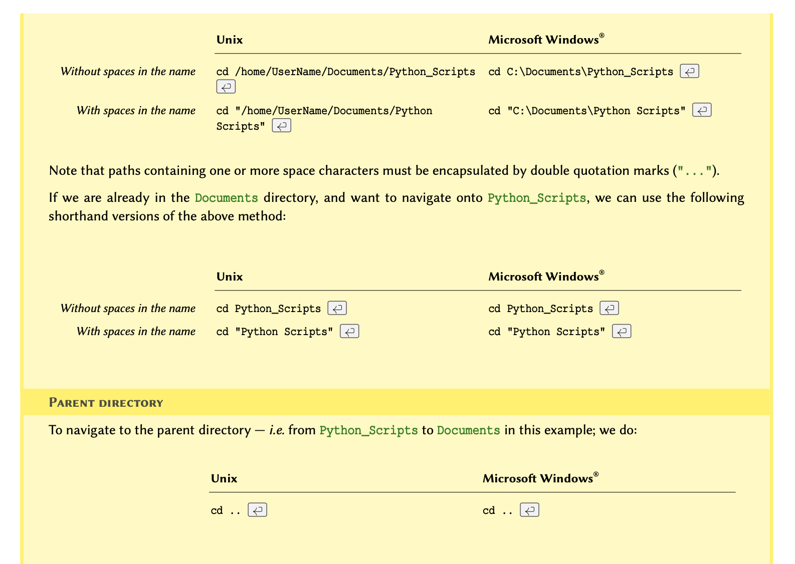
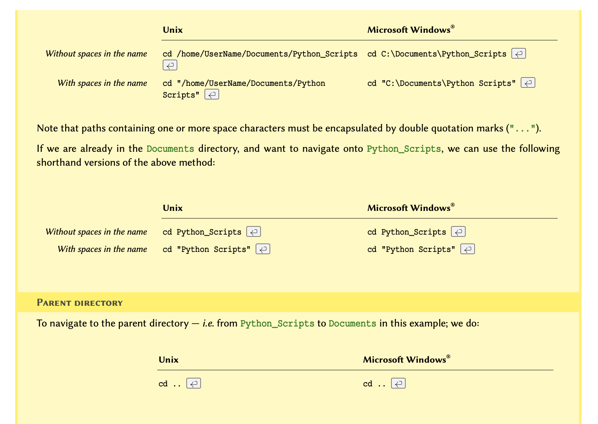
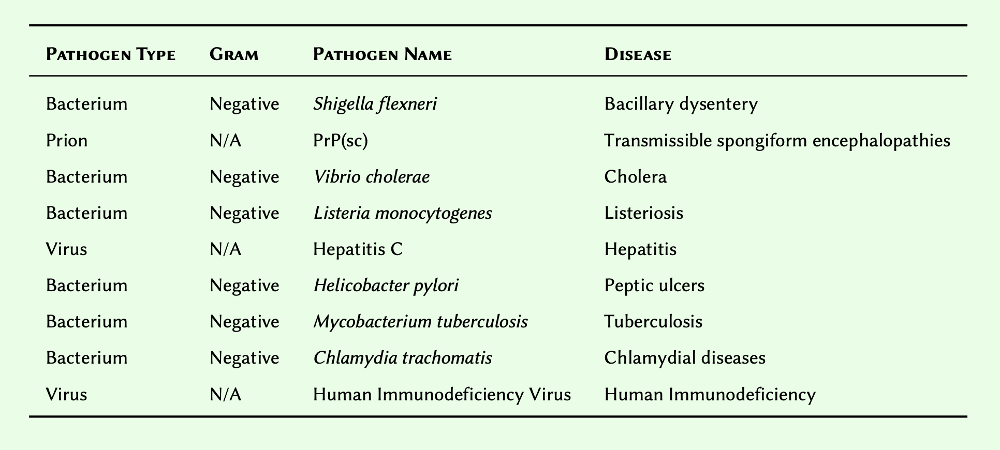

Content from Getting started
Last updated on 2023-04-18 | Edit this page
Download Chapter notebook (ipynb)
Overview
Questions
- Programming - why bother?
- Why Python?
- How to learn it?
Objectives
- Understand the concept of programming
- Understand the basics of Python language
Programming — why bother?
Data handling and analysis in bio-research and medicine is best done using coding. In October 2017, the American technology magazine Wired published an article in which the author outlines reasons why several established bio-science researchers working in reputable institutions felt the need to learn coding — specifically in Python: “Want to Make It as a Biologist? Better Learn to Code”.
This Course
We focus on the Python programming language throughout this course, but we discuss universal principles shared amongst many programming languages. Through a diverse range of examples, we will be training these principles by solving problems that we face in biological and medical research.
Why Python?
Python is a general-purpose programming language. This means that it can be exploited to design any type of software, from desktop and web, to robotics and automation, to data analysis. The 2020 survey conducted by the Python Software Foundation and JetBrains® found that approximately 85% of respondents used Python as their first language to conduct data analysis.
In addition, the 2021 developer survey conducted by StackOverflow found that Python is the third most popular general-purpose programming language after JavaScript and HTML/CSS. This means that it enjoys a vibrant community that support and maintain its development, and the development of the libraries associated with it. This is confirmed by the fact that the language is ranked as the second most popular language on GitHub®, which is the primary code-sharing platform amongst programmers.
How to learn?
Learning how to code as a beginner is akin to learning how to walk as a baby. You cannot learn programming by memorising directives; no matter how well you memorise them. To learn how to code, one must learn how think algorithmically; that is, how to break different tasks down into logical procedures. The only way to learn how to “think code” is to practice, make mistakes, and how to overcome those mistakes. It is common to make the same mistake more than once, especially in different contexts, and that can become frustrating at times. However, once you get it, you have it for life.
There are lots materials on the web, both free and paid, to assist with your learning. Use them to your advantage! Great programmers are not the ones who know every technical detail by heart; rather, they are the ones who know what they are looking for, and where they can find the answer.
Known Quirk
Unlike popular belief, the name Python has nothing to do with the snake. It is in fact derived from the popular British sketch comedy series Monty Python’s Flying Circus, of which inventor Guido van Rossum was a self-confessed fan.
Python: The Programming Language
Python is a general-purpose, high-level programming language. It was invented by the Dutch computer programmer Guido van Rossum and was released for the first time in 1990.
A high-level programming language is a language that enjoys strong abstraction from computer details. This means that it is closer to the language that is spoken and understood by humans; put simply: it makes the language more enjoyable to work with.
Categories
In terms of compilation (the conversion of code into the binary symbols understood by a computer), programming languages may be divided into two different categories:
1 - Compiled These are languages whose code is translated (compiled) into machine language en-masse, and in advance, using a designated compiler programme — e.g. C, Rust, Haskell.
2- Interpreted These languages rely on and must always be accompanied by an interpreter, whose job is to translate the source code into machine language one line at a time — e.g. Python, R, MATLAB®.
Content from Variables, Types, and Operations
Last updated on 2023-04-18 | Edit this page
Download Chapter notebook (ipynb)
Mandatory Lesson Feedback Survey
Overview
Questions
- What are I/O operations?
- What do variables do?
- Why types and scopes of variables are important?
- What types of operations are used?
Objectives
- Understanding the output and input operations
- Build concepts of different types of variables
- Learning about type conversions and scope
- Understanding mathematical and logical operations
In programming, we process data and produce outputs. When data is being processed, it is stored in a memory, so that it is readily available, and can therefore be subject to the processes we want to apply.
Throughout this section, we will discuss how to handle data in Python. We start by displaying data on the screen, and see how to receive input from a user. We then use these techniques to perform different mathematical and logical operations. This chapter introduces the fundamental principles that we employ every time we code in Python. On that account, make sure you understand everything before moving on.
I/O Operations
In computer science, input or output operations refer to the communication between an information processing system such as a computer, and the outside world, which may be a user or another computer. Such communications are more commonly known as I/O operations. In general, the outside world — especially in the context of this course, may be loosely defined as anything that falls outside of the coding environment.
REMEMBER
Only what we define within the environment and what we store in the memory is directly controlled by our application. We may access or take control over other environments through certain mediums; however, such interactions are classified as I/O operations. An example of this is interacting with a file on our computer, which we discuss in the topic of Strings. Whilst we have complete control over a file while working on it (e.g. reading from it or writing to it), the access to the file and the transmission of data is in fact controlled and managed not by the programming environment but by the operating system of the computer.
In programming, I/O operations include, but are not limited to:
displaying the results of a calculation
require the user to enter a value
writing or reading data to and from a file or a database
downloading data from the Internet
operating a hardware (e.g. a robot)
Advanced Topic
If you are interested in learning more about I/O systems and how they are handled at operating system level, you might benefit from chapter 13 of Operating Systems Concepts, 10th ed. by Abraham Silberschatz, Greg Gagne, and Peter Galvin.
I/O Operations in Python
In this section, we learn about two fundamental methods of I/O operations in Python. We will be using these methods throughout the course, so it is essential that you feel comfortable with them and the way they work before moving on.
Producing an output
The term output in reference to an application typically refers to data that has either been generated or manipulated by that application.
For example; we have two number and we would like to calculate their sum. The action of calculating the sum is itself a mathematical operation (discussed in the coming section). The result of our calculation is called an output. Once we obtain the result, we might want to save it in a file or display it on the screen, in which case we will be performing an I/O operation.
The simplest and most frequently used method for generating an output in almost every modern programming language is to display something on the screen. We recommend using JupyterLab notebooks to run our scripts and the typical method to produce an output is to display it in cell below the code.To do this, we will call a dedicated built-in function named print().
REMEMBER
In programming, a function is essentially an isolated piece of code. It usually to takes some inputs, does something to or with them, and produces an output. The pair of (typically round) parenthesis that follow a function are there to provide the function with the input arguments it needs when we call it, so that it can do what it is supposed to do using our data. We will explore functions in more details in Lesson 4 Functions.
The print() function can take several inputs and performs different tasks. Its primary objective, however, is to take some values as input and display them on the screen. Here is how it works:
Suppose we want to display some text in the terminal. To do so, we write:
print('Hello world!')in a cell of our notebook (or, if not using a notebook, an editor or IDE) and save the notebook in a file. This is now a fully functioning Python programme that we can run using the Python interpreter.
If you are using an Integrated Development Environment (IDE) — e.g. Visual Studio Code, you have to save the code in a file with extension .py and may then execute your code using the internal tools provided by that IDE. The specifics of how you do so depend on the IDE that you are using.
.py Python scripts can also be executed manually. To do so, we open the terminal in MacOS or Linux or the command prompt (CMD) in Windows and navigate to the directory where we saved the script.
NOTE
If you don’t know how to navigate in the terminal, see the example in section How to use terminal environment? at the end of this chapter.
Once in the correct directory, we run a script called script_a.py by typing python3 script_a.py in our terminal as follows:
BASH
python3 script_a.pyOUTPUT
Hello world!
This will call the Python 3 interpreter to execute the code we wrote in script_a.py. Once executed, which in this case should be instantaneously, we should see the output.
In a JupyterLab notebook we can press the keyboard shortcut ‘shift-enter’ to execute the code in a cell. The output will be displayed below the code cell.
Congratulations you have now successfully written and executed your first programme in Python.
REMEMBER
We know print() is a function because it ends with a pair of parenthesis, and it is written entirely in lowercase characters PEP-8: Function Names. Some IDEs change color when they encounter built-in functions in the code so that we won’t accidentally overwrite them. We shall discuss functions in more details in Lesson 4 Functions.
We can pass more than a single value to the print() function, provided that they are separated with a comma. For instance, if we write the code below and run the script, the results would be as shown in output.
PYTHON
print('Hello', 'John')OUTPUT
Hello JohnNotice that there is a space between ‘Hello’ and ‘John’ even though we did not include a space in our text. This is the default behaviour of the print() function when it receives more than a single value (argument).
This default behaviour may be changed:
PYTHON
print('Hello', 'John', sep='')OUTPUT
HelloJohnPYTHON
print('Hello', 'John', sep='--')OUTPUT
Hello--JohnPYTHON
print('Jane', 21, 'London', sep='.')OUTPUT
Jane.21.London
PYTHON
print('Protein Kinase C (Alpha subunit)')OUTPUT
Protein Kinase C (Alpha subunit)
Receiving an input
Inputs are I/O operations that involve receiving some data from the outside world. This might include reading the contents of a file, downloading something from the Internet, or asking the user to enter a value.
The simplest way to acquire an input is to ask the user to enter a value in the terminal. To do so, we use a dedicated built-in function called input().
The function takes a single argument called prompt. Prompt is the text displayed in the terminal to ask the user for an input. Figure Terminal window on a Linux computer and Terminal window on a Mac, illustrates a screen shot of my personal computer’s prompt, where it displays my user name (i.e. pouria) followed by a tilde (~). A terminal prompt may be different in each computer and operating system.
Here is how we implement the input() function:
input('Please enter your name: ')which is exactly the same as:
input(prompt='Please enter your name: ')If we save one of the above in a notebook and execute it, we will see:
python3 script_b.py
Please enter your name: _
The terminal cursor, displayed as an underscore in our example, will be in front of the prompt (i.e. 'Please enter your name: ') waiting for a response. Once it receives a response, it will proceed to run the rest of the code (if any), or terminate the execution.
We may store the user’s response in a variable. Variables are the topic of the next section, where we shall also review more examples on input() and how we can use it to produce results based on the responses we receive from the user.
Remember
Python is an interpreted language; that is, the code we write is executed by the Python interpreter one line at a time. The input() function performs a blocking process. This means that the execution of the code by the Python interpreter is halted upon encountering an input() function until the user enters a value. Once a value is entered, the interpreter then proceeds to execute the next line.
input('Please enter the name of a protein: ')Variables And Types
We use variables to store data in the memory. Each variable has 3 characteristics: scope, name, and type. Scope and name must be mutually unique. Starting with name, we will discuss each of these characteristics in more details throughout this chapter.
Variable names
Name of a variable is in fact an alias for a location in the memory. You can think of it as a postbox, which is used as a substitute for an address. Similarly, we use variable names so we wouldn’t have to use the actual address to the location we want in the memory because it would look something like 0x106fb8348.
There are some relatively simple rules to follow when defining variable names, which ultimately boil down to:

Remember
We should never overwrite an existing, built-in definition or identifier (e.g. int or print). We will be learning many such definitions and identifiers as we progress through this course. Nonetheless, the Jupyterlab notebook as well as any good IDE highlights syntaxes and built-in identifiers in different colours. In JupyterLab the default for built-in definitions is green. The exact colouring scheme depends on the IDE and the theme.
Once a variable is defined, its value may be altered or reset:
PYTHON
total_items = 2
print(total_items)OUTPUT
2Variables containing integer numbers are known as int, and those containing decimal numbers are known as float in Python.
PYTHON
total_items = 3
print(total_items)OUTPUT
3PYTHON
total_values = 3.2
print(total_values)OUTPUT
3.2PYTHON
temperature = 16.
print(temperature)OUTPUT
16.0
Variables can contain characters as well; but to prevent Python from confusing them with meaningful commands, we use quotation marks. So long as we remain consistent, it doesn’t matter whether we use single or double quotations. These variables are known as string or str:
PYTHON
forename = 'John'
surname = "Doe"
print('Hi,', forename, surname)OUTPUT
Hi, John DoeDo it Yourself
Oxidised low-density lipoprotein (LDL) receptor 1 mediates the recognition, internalisation and degradation of oxidatively modified low density lipoprotein by vascular endothelial cells. Using the Universal Protein Resource (UniProt) website, find this protein for humans, and identify:
- UniProt entry number.
- Length of the protein (right at the top).
- Gene name (right at the top).
Store the information you retrieved, including the protein name, in 4 separate variables.
Display the values of these 4 variables in one line, and separate the items with 3 spaces, as follows:
Name EntryNo GeneName Length
PYTHON
name = 'Oxidised low-density lipoprotein (LDL) receptor 1'
uniprot_entry = 'P78380'
gene_name = 'OLR1'
length = 273
print(name, uniprot_entry, gene_name, length, sep=' ')OUTPUT
Oxidised low-density lipoprotein (LDL) receptor 1 P78380 OLR1 273Do it Yourself
Write a script that upon execution, asks the user to enter the name of an enzyme and then retains the response in an appropriately named variable.
Use the variable to display an output similar to the following:
ENZYME_NAME is an enzyme.
where ENZYME_NAME is the name of the enzyme entered in the prompt.
Now alter your script to ask the user to enter the number of amino acids in that enzyme. Retain the value in another appropriately named variable.
Alter the output of your script to display a report in the following format:
ENZYME_NAME is an enzyme containing a total number of AMINO_ACIDS} amino acids.
where AMINO_ACIDS is the number of amino acids.
enzyme = input('Please enter the name of an enzyme: ')
print(enzyme, 'is an enzyme.')
length = input('How many amino acids does the enzyme contain? ')
print(enzyme, 'is an enzyme containing a total number of', length, 'amino acids.')Variable Types
When it comes to types, programming languages may be divided into two distinct categories:
Types
Statically typed language that require the programmer to define the type for every variable (statically typed).
Dynamically typed languages that define and maintain the types on the fly.
Python is a dynamically typed language. This means that, unlike statically typed languages, we rarely need to worry about the type definitions because in the majority of cases, Python takes care of them for us.
Advanced Topic
In computer programming, type systems are syntactic methods to enforce and / or identify levels of abstraction. An entire field in computer science has been dedicated to the study of programming languages from a type–theoretic approach. This is primarily due to the implication of types and their underlying principles in such areas in software engineering as optimisation and security. To learn more about the study of type systems, refer to: Pierce B. Types and programming languages. Cambridge, Mass.: MIT Press; 2002.
Why learn about types in a dynamically typed programming language?
Python enjoys a powerful type system out of the box. Table Built-in types in Python provides a comprehensive reference for the built-in types in Python. Built-in types are the types that exist in the language and do not require any third party libraries to implement or use.

* Not discussed in this course — included for reference only.
$
dict is not an iterable by default, however, it is possible to iterate through its keys. Mutability is an important concept in programming. A mutable object is an object whose value(s) may be altered. This will become clearer once we study
list and tuple. Find out more about mutability in Python from the documentations}. Complex numbers refer to a set of numbers that have a real part, and an imaginary part; where the imaginary part is defined as \(\sqrt{-1}\). These numbers are very useful in the study of oscillatory behaviours and flow (e.g. heat, fluid, electricity). To learn more about complex numbers, watch this Khan Academy video tutorial.
Sometimes we might need want to know what is the type of a variable. To do so, we use the build-in function type() as follows:
PYTHON
total_items = 2
print(type(total_items))OUTPUT
<class 'int'>PYTHON
total_values = 3.2
print(type(total_values))OUTPUT
<class 'float'>PYTHON
temperature = 16.
print(type(temperature))OUTPUT
<class 'float'>PYTHON
phase = 12.5+1.5j
print(type(phase))OUTPUT
<class 'complex'>PYTHON
full_name = 'John Doe'
print(type(full_name))OUTPUT
<class 'str'>PYTHON
value = 32
value_type = type(value)
print('Value', value, 'is an instance of', value_type)OUTPUT
Value 32 is an instance of <class 'int'>PYTHON
value = 24.3454
value_type = type(value)
print('Value', value, 'is an instance of', value_type)OUTPUT
Value 24.3454 is an instance of <class 'float'>PYTHON
value = 2.5 + 1.5
value_type = type(value)
print('Value', value, 'is an instance of', value_type)OUTPUT
Value 4.0 is an instance of <class 'float'>PYTHON
value = "RNA Polymerase III"
value_type = type(value)
print('Value', value, 'is an instance of', value_type)OUTPUT
Value RNA Polymerase III is an instance of <class 'str'>PYTHON
value = 0
value_type = type(value)
print('Value', value, 'is an instance of', value_type)OUTPUT
Value 0 is an instance of <class 'int'>PYTHON
value = .5 - 1
value_type = type(value)
print('Value', value, 'is an instance of', value_type)
OUTPUT
Value -0.5 is an instance of <class 'float'>PYTHON
value = 1.3e-5
value_type = type(value)
print('Value', value, 'is an instance of', value_type)OUTPUT
Value 1.3e-05 is an instance of <class 'float'>PYTHON
value = 3e5
value_type = type(value)
print('Value', value, 'is an instance of', value_type)OUTPUT
Value 300000.0 is an instance of <class 'float'>Conversion of types
Why convert types?
It is sometimes necessary to have the values returned by the input() function — i.e. the user’s response, in other types. Imagine the following scenario:
“We ask our user to enter the total volume of their purified protein, so that we can work out the amount of assay they need to conduct a specific experiment. To calculate this assay volume using the volume of the purified protein, we need to perform mathematical calculations based on the response we receive from our user. It is not possible to perform mathematical operations on non-numeric values. Therefore, we ought to somehow convert the type from str to a numeric type.”
The possibility of converting from one type to another depends entirely on the value, the source type, and the target type. For instance; we can convert an instance of type str (source type) to one of type int (target type) if and only if the source value consists entirely of numbers and there are no other characters.
Remember
To convert a variable from one type to another, we use the Type Name of the target type (as described in Table Built-in types in Python and treat it as a function.
For instance, to convert a variable to integer, we:
- look up the Type Name for integer from Table Built-in types in Python
- then treat the Type Name as a function:
int() - use the function to convert our variable: new_var =
int(old_var)
Here is an example of how we convert types in Python:
PYTHON
value_a = '12'
print(value_a, type(value_a))OUTPUT
12 <class 'str'>PYTHON
value_b = int(value_a)
print(value_b, type(value_b)) OUTPUT
12 <class 'int'>If we attempt to convert a variable that contains non-numeric values, a ValueError is raised:
PYTHON
value_a = '12y'
print(value_a, type(value_a))OUTPUT
12y <class 'str'>PYTHON
value_b = int(value_a)ERROR
Error in py_call_impl(callable, dots$args, dots$keywords): ValueError: invalid literal for int() with base 10: '12y'
Detailed traceback:
File "<string>", line 1, in <module>Do it Yourself
In programming, we routinely face errors resulting from different mistakes. The process of finding and correcting such mistakes in the code is referred to as debugging.
We have been given the following snippet written in Python 3:
value_a = 3
value_b = '2'
result = value_a + value_b
print(value_a, '+', value_b, '=', result)but when the code is executed, we encounter an error message as follows:
Traceback (most recent call last):
File "<stdin>", line 1, in <module>
TypeError: unsupported operand type(s) for +: 'int' and 'str'Debug the snippet so that the correct result is displayed:
3 + 2 = 5
PYTHON
value_a = 3
value_b = '2'
result = value_a + int(value_b)
print(value_a, '+', value_b, '=', result)OUTPUT
3 + 2 = 5Handling input variables
We may use type conversion in conjunction with the values returned by the input() function:
response = input('Please enter a numeric value: ')
response_numeric = float(response)
print('response:', response)
print('response type:', type(response))
print('response_numeric:', response_numeric)
print('response_numeric type:', type(response_numeric))The output shows the results when we enter numeric values as directed.
Do it Yourself
We know that each amino acid in a protein is encoded by a triplet of mRNA nucleotides.
With that in mind, alter the script you wrote for Do it Yourself and use the number of amino acids entered by the user to calculate the number of mRNA nucleotides.
Display the results in the following format:
ENZYME_NAME is an enzyme with AMINO_ACIDS amino acids and NUCLEOTIDES nucleotides.
where NUCLEOTIDES is the total number of mRNA nucleotides that you calculated.
Note: Multiplication is represented using the asterisk (*) sign.
enzyme = input('Please enter the name of an enzyme: ')
length = input('How many amino acids does the enzyme contain? ')
nucleotides = 3 * int(length)
print(enzyme, 'is an enzyme with', length, 'amino acids and', nucleotides, 'nucleotides.')Variable scopes
Resolution of namesWhen defining a variable, we should always consider where in our programme we intent to use it. The more localised our variables, the better. This is because local variables are easier to distinguish, and thus reduce the chance of making mistakes — e.g. unintentionally redefine or alter the value of an existing variable.
To that end, the scope of a variable defines the ability to reference a variable from different points in our programmes. The concept of local variables becomes clearer once we explore functions in programming in chapter Functions.
As displayed in Figure Variable scopes, the point at or from which a variable can be referenced depends on the location where the variable is defined.
In essence, there are three general rules to remember in relation variable scopes in Python:
I. A variable that is defined in the outer scope, can be accessed or called in the inner scopes, but it cannot be altered implicitly. Not that such variables may still be altered using special techniques (not discussed).
- A variable that is defined in the innermost scopes (local), can only be accessed, called, or altered within the boundaries of the scope it is defined in.
- The inner scopes from which a variable is referenced must themselves have be contained within the defining scope — e.g. in
FuncBof Figure Variable scopes, we can referencea,b, andx; but notf1. This is because the scope off1isScript→FuncA, so it can only be referenced fromScript→FuncA→ …, but not `Script→ … orScript→FuncB→ ….

Python is an interpreted language. This means that the Python interpreter goes through the codes that we write line by line, interpreting it to machine language. It is only then that the commands are processed and executed by the computer. On that account, a variable (or a function) can be referenced only after its initial definition. That is why, for instance, in Script (part 2) of Figure Variable scopes, we can reference every variable and function except for FuncC, which is declared further down the code hierarchy.
Although scope and hierarchy appear at first glance as theoretical concepts in programming, their implications are entirely practical. The definition of these principles vary from one programming language to another. As such, it is essential to understand these principles and their implications in relation to any programming language we are trying to learn.
 

Operations
Through our experimentations with variable types, we already know that variables may be subject to different operations.
When assessing type conversions we also established that the operations we can apply to each variable depend on the type of that variable. To that end, we learned that although it is sometimes possible to mix variables from different types to perform an operation — e.g. multiplying a floating point number with an integer, there are some logical restrictions in place.
Throughout this section, we will take a closer look into different types of operations in Python. This will allow us to gain a deeper insight into the concept and familiarise ourselves with the underlying logic.
To recapitulate on what we have done so far, we start off by reviewing additions — the most basic of all operations.
Give the variable total_items:
PYTHON
total_items = 2
print(total_items) OUTPUT
2We can increment the value of an existing variable by 1 as follows:
PYTHON
total_items = total_items + 1
print(total_items)OUTPUT
3Given 2 different variables, each containing a different value; we can perform an operation on these values and store the result in another variable without altering the original variables in any way:
PYTHON
old_items = 4
new_items = 3
total_items = old_items + new_items
print(total_items)OUTPUT
7We can change the value of an existing variable using the value stored in another variable:
PYTHON
new_items = 5
total_items = total_items + new_items
print(total_items)OUTPUT
12There is also a shorthand method for applying the operation on an existing variable:
PYTHON
total_items = 2
print(total_items)OUTPUT
2PYTHON
total_items += 1
print(total_items)OUTPUT
3PYTHON
new_items = 5
total_items += new_items
print(total_items)OUTPUT
8As highlighted in the introduction, different operations may be applied to any variable or value. Throughout the rest of this section, we will explore the most fundamental operations in programming, and learn about their implementation in Python.
Mathematical Operations
Suppose a and b are 2 variables representing integer numbers as follows:
a = 17
b = 5Using a and b we can itemise built-in mathematical operations in Python as follows:

Remember
As far as mathematical operations are concerned, variables a and b may be an instance of any numeric type. See Table Routine mathematical operations in Python to find out more about numeric types in Python.
Values of type int have been chosen in our examples to facilitate the understanding of the results.
Do it Yourself
- Calculate the following and store the results in appropriately named variables:
- \(5.8 \times 3.3\)
- \(\frac{180}{6}\)
- \(35 - 3.0\)
- \(35 - 3\)
- \(2^{1000}\)
Display the result of each calculation – including the type, in the following format:
Result: X is an instance of <class 'Y'>
- Now using the results you obtained:
I. Can you explain why is the result of \(35 - 3.0\) is an instance of type
float, whilst that of \(35 - 3\) is of typeint?
II. Unlike the numeric types, string values have a length. To obtain the length of a string value, we use len(). Convert the result for \(2^{1000}\) from int to str, then use the aforementioned function to work out the length of the number — i.e. how many digits is it made of?
If you feel adventurous, you can try this for \(2^{10000}\) or higher; but beware that you might overwhelm your computer and need a restart it if you go too far (i.e. above \(2^{1000000}\)). Just make sure you save everything beforehand, so you don’t accidentally step on your own foot.}
Hint: We discuss len() in subsection of arrays. However, at this point, you should be able to use the official documentations and StackOverflow to work out how it works.
PYTHON
q1_a = 5.8 * 3.3
print('Result:', q1_a, 'is an instance of', type(q1_a))
OUTPUT
Result: 19.139999999999997 is an instance of <class 'float'>PYTHON
q1_b = 180 / 6
print('Result:', q1_b, 'is an instance of', type(q1_b))
OUTPUT
Result: 30.0 is an instance of <class 'float'>PYTHON
q1_c = 35 - 3.0
print('Result:', q1_c, 'is an instance of', type(q1_c))
OUTPUT
Result: 32.0 is an instance of <class 'float'>PYTHON
q1_d = 35 - 3
print('Result:', q1_d, 'is an instance of', type(q1_d))
OUTPUT
Result: 32 is an instance of <class 'int'>PYTHON
q1_e = 2 ** 1000
print('Result:', q1_e, 'is an instance of', type(q1_e))OUTPUT
Result: 10715086071862673209484250490600018105614048117055336074437503883703510511249361224931983788156958581275946729175531468251871452856923140435984577574698574803934567774824230985421074605062371141877954182153046474983581941267398767559165543946077062914571196477686542167660429831652624386837205668069376 is an instance of <class 'int'>
In the case of \(35 - 3.0\) vs \(35 - 3\), the former includes a floating point number. Operations involving multiple numeric types always produce the results as an instance of the type that covers all of the operands – i.e. float covers int, but not vice-versa.
PYTHON
big_num = 2 ** 1000
big_num_str = str(big_num)
big_num_len = len(big_num_str)
print('Length of 2**1000:', big_num_len)OUTPUT
Length of 2**1000: 302Shorthands
When it comes to mathematical operations in Python, there is a frequently used shorthand method that every Python programmer should be familiar with.
Suppose we have a variable defined as total_residues = 52 and want to perform a mathematical operation on it. However, we would like to store the result of that operation in total_residues instead of a new variable. In such cases, we can do as follows:
PYTHON
total_residues = 52
# Addition:
total_residues += 8
print(total_residues)OUTPUT
60PYTHON
# Subtraction:
total_residues -= 10
print(total_residues)OUTPUT
50PYTHON
# Multiplication:
total_residues *= 2
print(total_residues)OUTPUT
100PYTHON
# Division:
total_residues /= 4
print(total_residues)OUTPUT
25.0PYTHON
# Floor quotient:
total_residues //= 2
print(total_residues)OUTPUT
12.0PYTHON
# Remainder:
total_residues %= 5
print(total_residues)OUTPUT
2.0PYTHON
# Power:
total_residues **= 3
print(total_residues)OUTPUT
8.0We can also perform such operations using multiple variables:
PYTHON
total_residues = 52
new_residues = 8
number_of_proteins = 3
total_residues += new_residues
print(total_residues)OUTPUT
60PYTHON
total_residues += (number_of_proteins * new_residues)
print(total_residues)OUTPUT
84Do it Yourself
- Given:
- Circumference: \(C = 18.84956\)
- Radius: \(R = 3\)
and considering that the properties of a circle are defined as follows:
\[\pi = \frac{C}{D}\] calculate \(\pi\) using the above equation and store it in a variable named pi:
Then round the results to 5 decimal places and display the result in the following format:
The value of pi calculated to 5 decimal places: X.XXXXX
Note: To round floating point numbers in Python, we use round(). This is a built-in function that takes 2 input arguments: the first is the variable/value to be rounded, and the second is the number decimal places. Read more about round() in the official documentations.
-
Now without creating a new variable, perform the following operation:
\[pi = \frac{pi}{(3 \bmod 2) - 1}\]
where the expression ’‘\(3 \bmod 2\)’’ represents the remainder for the division of 3 by 2.
Explain the output.
PYTHON
c = 18.84956
r = 3
d = r * 2
pi = c / d
print('The value of pi calculated to 5 decimal places:', round(pi, 5))OUTPUT
The value of pi calculated to 5 decimal places: 3.14159 pi /= (3 % 2) - 1
The calculation raises a ZeroDivisionError. This is because division by zero is mathematically impossible.
Precedence
In mathematics and computer programming, there is a collection of conventional rules on the precedence of procedures to evaluate a mathematical expression. This collection of rules is referred to as the order of operation or operator precedence.
Suppose we have a mathematical expression as follows:
\[x = 2 + 3 \times 9\]Such an expression can only be evaluated correctly if we do the multiplication first and then perform the addition. This means that the evaluation is done as follows:
\[given:3 \times 9 = 27\] \[\implies x = 2 + 27\]
\[ = 29\]
For instance, in an expression such as:
\[x = 2 \times (3 + (5 - 1)^2)\]
the evaluation workflow may be described as follows:
\[x = 2 \times (3 + 4^2)\] \[ = 2 \times (3 + 16)\] \[ = 38\]The same principle applies in Python. This means that if we use Python to evaluate the above expression, the result would be identical:
PYTHON
result = 2 * (3 + (5 - 1) ** 2)
print(result)OUTPUT
38Do it Yourself
Display the result of each item in the following format:
EXPRESSION = RESULTFor example:
2 + 3 = 5- Calculate each expression without using parentheses:
- \(3 \times \frac{2}{4}\)
- \(5 + 3 \times \frac{2}{4}\)
- \(3 \times \frac{2}{4} + 5\)
- \(\frac{2}{4} \times 3\)
- Calculate these expressions using parentheses:
- \(5 + \frac{2}{4} \times 3\)
- \(5 + \frac{2 \times 3}{4}\)
- \(5 + \frac{2}{4 \times 3}\)
- Given
a = 2
b = 5use a and b to calculate the following expressions:
- \((a + b)^2\)
- \(a^2 + 2ab + b^2\)
PYTHON
q1_a = 3 * 2 / 4
print('3 * 2 / 4 =', q1_a)
OUTPUT
3 * 2 / 4 = 1.5PYTHON
q1_b = 5 + 3 * 2 / 4
print('5 + 3 * 2 / 4 =', q1_b)
OUTPUT
5 + 3 * 2 / 4 = 6.5PYTHON
q1_c = 3 * 2 / 4 + 5
print('3 * 2 / 4 + 5 =', q1_c)
OUTPUT
3 * 2 / 4 + 5 = 6.5PYTHON
q1_d = 2 / 4 * 3
print('2 / 4 * 3 =', q1_d)OUTPUT
2 / 4 * 3 = 1.5PYTHON
q2_a = 5 + (2 / 4) * 3
print('5 + (2 / 4) * 3 =', q2_a)
OUTPUT
5 + (2 / 4) * 3 = 6.5PYTHON
q2_b = 5 + (2 * 3) / 4
print('5 + (2 * 3) / 4 =', q2_b)
OUTPUT
5 + (2 * 3) / 4 = 6.5PYTHON
q2_c = 5 + 2 / (4 * 3)
print('5 + 2 / (4 * 3) =', q2_c)OUTPUT
5 + 2 / (4 * 3) = 5.166666666666667PYTHON
a = 2
b = 5
q3_a = (a + b) ** 2
print('(a + b)^2 =', q3_a)
OUTPUT
(a + b)^2 = 49PYTHON
q3_b = a ** 2 + 2 * a * b + b ** 2
print('a^2 + 2ab + b^2 =', q3_b)OUTPUT
a^2 + 2ab + b^2 = 49Non-numeric values
It sometimes makes sense to apply some mathematical operations to non-numeric variables too.
We can multiply strings to repeat them. There is no specific advantage to the use of multiplication instead of manually repeating characters or words, but it makes our code look cleaner, and that’s always a good thing!
We can also add string values to each other. This is called string concatenation. It is a useful method for concatenating a few strings and / or string variables.
PYTHON
SEPARATOR = '-' * 20
NEW_LINE = '\n'
SPACE = ' '
forename = 'Jane'
surname = 'Doe'
birthday = '01/01/1990'
full_name = forename + SPACE + surname
data = full_name + NEW_LINE + SEPARATOR + NEW_LINE + 'DoB: ' + birthday
print(data)
OUTPUT
Jane Doe
--------------------
DoB: 01/01/1990Remember
New line character or '\n' is a universal directive to induce a line-break in Unix based operating systems (MACOS) and Linux). In WINDOWS, we usually us '\r' or '\r\n' instead. These are known as escape sequences, which we explore in additional details under string operations in chapter Strings
Do it Yourself
The risk of Huntington’s disease appears to increase proportional to the continuous repetition of CAG nucleotides (glutamine codon) once they exceed 35 near the beginning of the Huntingtin (IT15) gene. The CAG repeats are also referred to as a polyglutamine or polyQ tract.
glutamine_codon = 'CAG'- Create a polynucleotide chain representing 36 glutamine codons. Store the result in a variable called
polyq_codons.
Display the result as:
Polyglutamine codons with 36 repeats: XXXXXXXXX...- Use len() to work out the length of
polyq_codons, and store the result in a variable calledpolyq_codons_length.
Display the result in the following format:
Number of nucleotides in a polyglutamine with 36 repeats: XXXUse len() to work out the length of
glutamin_codon, and store the result in variableamino_acids_per_codon.Divide
polyq_codons_lengthbyamino_acids_per_codonto prove that the chain contains the codon for exactly 36 amino acids. Store the result in variablepolyq_peptide_length.
Display the result in the following format:
Number of amino acids in a polyglutamine with 36 repeats: XXX- Determine the types for the following variable:
amino_acids_per_codon
polyq_codons_length
-
polyq_peptide_length
and display the result for each item in the following format:
Value: XXX - Type: <class 'XXXX'>Are all the variables in task #5 of the same type? Why?
Repeat from task #4, but this time use an alternative method of division as outlined in See Table Routine mathematical operations in Python.
PYTHON
glutamine_codon = 'CAG'
polyq_codons = glutamine_codon * 36
print('Polyglutamine codons with 36 repeats:', polyq_codons)OUTPUT
Polyglutamine codons with 36 repeats: CAGCAGCAGCAGCAGCAGCAGCAGCAGCAGCAGCAGCAGCAGCAGCAGCAGCAGCAGCAGCAGCAGCAGCAGCAGCAGCAGCAGCAGCAGCAGCAGCAGCAGCAGCAGPYTHON
polyq_codons_length = len(polyq_codons)
print('Number of nucleotides in a polyglutamine with 36 repeats:', polyq_codons_length)OUTPUT
Number of nucleotides in a polyglutamine with 36 repeats: 108PYTHON
amino_acids_per_codon = len(glutamine_codon)PYTHON
polyq_peptide_length = polyq_codons_length / amino_acids_per_codon
print('Number of amino acids in a polyglutamine with 36 repeats:', polyq_peptide_length)
OUTPUT
Number of amino acids in a polyglutamine with 36 repeats: 36.0PYTHON
print('Value:', amino_acids_per_codon, '- Type:', type(amino_acids_per_codon))
OUTPUT
Value: 3 - Type: <class 'int'>PYTHON
print('Value:', polyq_codons_length, '- Type:', type(polyq_codons_length))
OUTPUT
Value: 108 - Type: <class 'int'>PYTHON
print('Value:', polyq_peptide_length, '- Type:', type(polyq_peptide_length))OUTPUT
Value: 36.0 - Type: <class 'float'>
No, polyq_peptide_length is an instance of type float. This is because we used the normal division (/) and not floor division (//}) to calculate its value. The result of normal division is always presented as a floating point number.
PYTHON
polyq_peptide_length = polyq_codons_length // amino_acids_per_codon
print('Number of amino acids in a polyglutamine with 36 repeats:', polyq_peptide_length)
OUTPUT
Number of amino acids in a polyglutamine with 36 repeats: 36PYTHON
print('Value:', amino_acids_per_codon, '- Type:', type(amino_acids_per_codon))
OUTPUT
Value: 3 - Type: <class 'int'>PYTHON
print('Value:', polyq_codons_length, '- Type:', type(polyq_codons_length))
OUTPUT
Value: 108 - Type: <class 'int'>PYTHON
print('Value:', polyq_peptide_length, '- Type:', type(polyq_peptide_length))OUTPUT
Value: 36 - Type: <class 'int'>Logical Operations
An operation may involve a comparison. The result of such operations is either True or False. This is known as the Boolean or bool data type. In reality, however, computers record True and False as 1 and 0 respectively.
Operations with Boolean results are referred to as logical operations. Testing the results of such operations is known as truth value testing.
Given the two variables a and b as follows:
a = 17
b = 5Boolean operations may be defined as outlined in Table Routine logical operations in Python..

Do it Yourself
We know that in algebra, the first identity (square of a binomial) is:
\[(a + b)^2 = a^2 + 2ab + b^2\] now given:
a = 15
b = 4- Calculate
\[y_1 = (a + b)^{2}\] \[y_2 = a^2 + 2ab + b^2\]
Display the results in the following format:
y1 = XX
y2 = XX
- Determine whether or not
y_1is indeed equal toy_2. Store the result of your test in another variable calledequivalence. Display the results in the following format:
Where a = XX and b = XX:
y1 is equal to y2: [True/False]PYTHON
a = 15
b = 4
y_1 = (a + b) ** 2
y_2 = a ** 2 + 2 * a * b + b ** 2
print('y1 =', y_1)OUTPUT
y1 = 361PYTHON
print('y2 =', y_2)OUTPUT
y2 = 361PYTHON
equivalence = y_1 == y_2
print('Where a =', a, ' and b=', b)OUTPUT
Where a = 15 and b= 4PYTHON
print('y1 is equal to y2:', equivalence)OUTPUT
y1 is equal to y2: TrueNegation
We can also use negation in logical operations. Negation in Python is implemented using not:
Do it Yourself
Using the information from previous Do it Yourself:
- Without using not, determine whether or not
y_1is not equal toy_2. Display the result of your test and store it in another variable calledinequivalent.
- Negate
inequivalentand display the result.
PYTHON
inequivalent = y_1 != y_2
print(inequivalent)OUTPUT
FalsePYTHON
inequivalent_negated = not inequivalent
print(inequivalent_negated)
OUTPUT
TrueDisjunctions and Conjunctions
Logical operations may be combined using conjunction with and and disjunction with or to create more complex logics:

Do it Yourself
Given
a = True
b = False
c = TrueEvaluate the following statements:
- a == b
- a == c
- a
orb - a
andb - a
orbandc - (a
orb)andc -
notaor(bandc) -
notaornot(bandc) -
notaandnot(bandc) -
notaandnot(borc)
Display the results in the following format:
1. [True/False]
2. [True/False]
...Given that:
PYTHON
a = True
b = False
c = TruePYTHON
print('1.', a == b)OUTPUT
1. FalsePYTHON
print('2.', a == c)OUTPUT
2. TruePYTHON
print('3.', a or b)OUTPUT
3. TruePYTHON
print('4.', a and b)OUTPUT
4. FalsePYTHON
print('5.', a or b and c)OUTPUT
5. TruePYTHON
print('6.', (a or b) and c)OUTPUT
6. TruePYTHON
print('7.', not a or (b and c))OUTPUT
7. FalsePYTHON
print('8.', not a or not(b and c))OUTPUT
8. TruePYTHON
print('9.', not a and not(b and c))OUTPUT
9. FalsePYTHON
print('10.', not a and not(b or c))OUTPUT
10. FalseComplex logical operations
It may help to break down more complex operations, or use parenthesis to make them easier to both read and write:

Notice that in the last example, all notations are essentially the same and only vary in terms of their collective results as defined using parenthesis. Always remember that in a logical statement:
Logical statement
- The statement in parenthesis does not have precedence over the rest of the state (unlike mathematical statements). It merely defines an independent part of the operation whose response is evaluated separately.
- The precedence is established on a first come, first serve basis (from left to right).
- Always use parenthesis in longer statements for clarification.
-
In disjunctive statements —i.e. a > 5
orb > 5, if the first part isTrue, the second part is not checked. In other words, if a is greater than 5, the computer does not proceed to check whether or not b is greater than 5.
-
In conjunctive statements —i.e. a > 5
andb > 5, the statement proceeds to the seconds part if and only if the first part isTrue. In other words, the result of a conjunctive statement is onlyTrueif and only if both a and b are greater than 5. If a isFalse, the entire statement will inevitably beFalse.
- The longer the statement, the more difficult it would be to understand it properly, and by extension, the more likely it would be to cause problems.
PYTHON
a, b, c = 17, 5, 2 # Alternative method to define variables.PYTHON
# Disjunction: false OR true.
a < b or b > c OUTPUT
TruePYTHON
# Disjunction: true OR true.
a > b or b > c OUTPUT
TruePYTHON
# Conjunction: true AND true.
a > b and b > c OUTPUT
TruePYTHON
# Conjunction: false and true.
a < b and b > c OUTPUT
FalsePYTHON
# Disjunction and conjunction: true OR false AND true
a > b or b < c and b < aOUTPUT
TruePYTHON
# Disjunction and conjunction: false OR true AND false
a < b or b > c and b > aOUTPUT
FalsePYTHON
# Disjunctions and conjunction: false OR true AND true
a < b or b > c and b < aOUTPUT
TruePYTHON
# Disjunction and negated conjunction and conjunction:
# true AND NOT false AND false
a < b or not b < c and b > aOUTPUT
FalsePYTHON
# Disjunction and negated conjunction - similar to the
# previous example: true AND NOT (false AND false)
a < b or not (b < c and b > a)OUTPUT
TrueThese are only a few examples. There are endless possibilities, try them yourself and see how they work.
To that end, you may want to use variables to split complex statements down to smaller portions:
PYTHON
age_a, age_b = 15, 35
are_positive = age_a > 0 and age_b > 0
a_is_older = are_positive and (age_a > age_b)
b_is_older = are_positive and (age_a < age_b)
a_is_teenager = are_positive and 12 < age_a < 20
b_is_teenager = are_positive and 12 < age_b < 20
a_is_teenager and b_is_olderOUTPUT
TruePYTHON
a_is_teenager and a_is_olderOUTPUT
FalsePYTHON
a_is_teenager and (b_is_teenager or b_is_older)OUTPUT
TrueDo it Yourself
Given
a = 3
b = 13Test the following statements and display the results:
- \(a^2 < b\)
- \(3 - a^3 < b\)
- \(|25 - a^2| > b\)
- \(25 \bmod a^2 > b\)
- \(25 \bmod a^2 > b\) or \(25 \bmod b < a\)
- \(25 \bmod a^2 < b\) and \(25 \bmod b > a\)
- \(\frac{12}{a}\) and \(a\times4 < b\)
where “|…|” represents the absolute value, and “\(n \bmod m\)” represents the remainder for the division of \(n\) by \(m\).}
Display the results in the following format:
1. [True/False]
2. [True/False]
...PYTHON
#Given that:
a = 3
b = 13
print('1.', a**2 < b)OUTPUT
1. TruePYTHON
print('2.', (3 - a**3) < b)OUTPUT
2. TruePYTHON
print('3.', abs(25 - a**2) > b)OUTPUT
3. TruePYTHON
print('4.', (25 % a**2) > b)OUTPUT
4. FalsePYTHON
print('5.', (25 % a**2) > b or (25 % b) < a)OUTPUT
5. FalsePYTHON
print('6.', (25 % a**2) < b and (25 % b) > a)OUTPUT
6. TruePYTHON
print('7.', (12 / a) and (a * 4) < b)OUTPUT
7. TrueExercises
End of chapter Exercises
Write and execute a Python script to display your own name as an output in the terminal.
Write and execute a Python script that:
- Displays the text
Please press enter to continue..., and waits for the user to press enter. - Once the user pressed enter, the program should display
Welcome to my programme!before it terminates.
- We have an enzyme whose reaction velocity is \(v=50~mol \cdot L^{-1} \cdot s^{-1}\) at the substrate concentration of \([S] = K_{m} = 2.5~mol \cdot L^{-1}\). Work out the maximum reaction velocity or \(V_{\max}\) for this enzyme using the Michaelis-Menten equation: \[v = \frac{V_{\max} [\textrm{S}]}{K_{m} + [\textrm{S}]}\]
Keypoints
- Two key functions for I/O operations are print() and input()
- Three most commonly used variables such as
int,float, andstr. - Variable scope can be local or global depending where they are being used.
- Mathematical operations follow conventional rules of precedence
- Logical operations provide results in Boolean (True or False)
Content from Conditional Statements
Last updated on 2023-04-18 | Edit this page
Download Chapter notebook (ipynb)
Overview
Questions
- What are conditional statements?
- How conditional statements are used to make decisions?
- Why indentation is so important in Python?
- Is there any hierarchical importance of conditional statements?
Objectives
- Understand the logic behind using conditional statements.
- Practice conditional statements.
- Learning structuring code using correct indentation.
- Understanding the hierarchy of conditional statements.
This chapter assumes that you are familiar with the following concepts in Python 3:
When we construct logical expressions, we almost always do so because we need to test something. The definition of a process through which we test our logical expressions and provide directives on how to proceed is known in computer science as a conditional statement. Conditional statements are a feature of programming languages. This means that although their definitions and grammar may vary slightly from one programming language to another, their principles are almost universally identical.
Being a high-level programming language, defining conditional statements is very easy in Python. Before we start, however, let us briefly review the way conditional statements actually work. To help us with that, we use flowchart diagrams.
EXAMPLE: Algorithms in daily life
We use algorithms in our life every day without realising it.
Suppose we enter a room poorly lit room to work. The first things that we notice is that the room is insufficiently lit. We check to see whether or not the light is on; if not, we find the switch to turn on the light. Likewise, if the light is on, we go ahead and turn on the desk lamp before we proceed with our business.
Processes of Algorithms
This scenario may be perceived as a set of processes. These processes include a set of procedures that may be outlined as follows:
-
Action: Enter the room. -
Input: Determine that the room is insufficiently lit. -
Condition: Is the light switched on?
- NO:
Action: turn on the lights, - YES:
Action: turn on the desk lamp.
-
Action: Proceed with our business.
Now that we know what procedures are involved, we can draw a flowchart of the process:

Programming is not merely a hard skill. It is the door to a different way of thinking that enables one to break complex procedures down to simple, stepwise components and tasks. Flowcharts help us perceive processes as computers do — that is, one task or component at a time. As we progress in programming, our brains develop the ability to think in a procedural way. This is called algorithmic thinking, and is one of the most important soft-skills that a programmer can develop.
There are international competitions and comprehensive courses dedicated to this concept. At the end of the day, however, one can only acquire a skill through practice.
Advanced Topic
If you are keen to learn more about algorithms and algorithmic thinking, or just want to try out some of the problems, you may want to look into some of the past competition papers on Computational and Algorithmic Thinking (CAT) published by the Australian Mathematics Trust.
Exercise is provided to give you an idea of the type of problems that may be tackled in a procedural way.
Do it Yourself
On a distant planet, the dominant carnivore, the zab, is nearing extinction. The number of zabs born in any year is one more than the (positive) difference between the number born in the previous year and the number born in the year before that.
Examples
- If 7 zabs were born last year and 5 the year before, 3 would be born this year.
- If 7 zabs were born last year and 10 the year before, 4 would be born this year.
If 2 zabs were born in the year 2000 and 9 zabs were born in 2001. What is the first year after 2000 when just 1 zab will be born?
- 2009
- 2011
- 2013
- 2015
- 2017
Credit: This question is taken from the 2011 Computational and Algorithmic Thinking (CAT) Competition held by the Australian Mathematics Trust.}
To obtain the answer, we may write an algorithm in a pseudo-code format as follows:
let a_total = 2
let b_total = 9
let current_total = absolute(a_total - b_total) + 1
let a_total = b_total
let b_total = current_total
let current_year = 2002
do {
current_total = absolute(a_total - b_total) + 1
a_total = b_total
b_total = current_total
current_year = current_year + 1
} while current_total > 1
display current_year
Given:
year = 2000; a_total = 2
year = 2001; b_total= 9
the above process with repeat the section written in curly brackets for as long
as current_total > 1:
current_year: 2002; a_total = 2, b_total = 9, current_total = 8
Is current_total > 1 ? Yes:
current_year: 2003; a_total = 9, b_total = 8; current_total = 2
Is current_total > 1 ? Yes:
current_year: 2004; a_total = 8; b_total = 2; current_total = 7
Is current_total > 1 ? Yes:
current_year: 2005; a_total = 2; b_total = 7; current_total = 6
Is current_total > 1 ? Yes:
current_year: 2006; a_total = 7; b_total = 6; current_total = 2
Is current_total > 1 ? Yes:
current_year: 2007; a_total = 6; b_total = 2; current_total = 5
Is current_total > 1 ? Yes:
current_year: 2008; a_total = 2; b_total = 5; current_total = 4
Is current_total > 1 ? Yes:
current_year: 2009; a_total = 5; b_total = 4; current_total = 2
Is current_total > 1 ? Yes:
current_year: 2010; a_total = 4; b_total = 2; current_total = 3
Is current_total > 1 ? Yes:
current_year: 2011; a_total = 2; b_total = 3; current_total = 2
Is current_total > 1 ? Yes:
current_year: 2012; a_total = 3; b_total = 2; current_total = 2
Is current_total > 1 ? Yes:
current_year: 2013; a_total = 2; b_total = 2; current_total = 1
Is current_total > 1 ? No:
The correct answer is c) 2013.
If this algorithm/pseudo-code is translated to Python language, it will look like this:
PYTHON
a_total = 2
b_total = 9
current_year = 2002
current_total = abs(a_total - b_total) + 1
a_total = b_total
b_total = current_total
while (current_total > 1):
current_total = abs(a_total - b_total) + 1
a_total = b_total
b_total = current_total
current_year = current_year + 1
print(current_year)OUTPUT
2013Conditions in Python
To implement conditional statements in Python, we use 3 syntaxes:
- To initiate the statement, we use the syntax if followed by the condition and a colon;
PYTHON
students_present = 15
# Conditional statement:
if students_present > 10: # Initiation
# Directive (must be indented).
print('More than 10 students are present.')OUTPUT
More than 10 students are present.- To create an alternative condition after the first condition has been defined, we use the syntax elif followed by the new condition and a colon;
PYTHON
students_present = 5
# Conditional statement:
if students_present > 10: # Initiation
# Directive (must be indented).
print('More than 10 students are present.')
elif 0 < students_present < 10:
print('Less than 10 students are present.')OUTPUT
Less than 10 students are present.- To introduce a default — i.e. where none of the above are
True, we use the syntax else.
PYTHON
students_present = 0
# Conditional statement:
if students_present > 10: # Initiation
# Directive (must be indented).
print('More than 10 students are present.')
elif 0 < students_present < 10: # Alternative condition
# Alternative directive (must be indented).
print('Less than 10 students are present.')
else: # Default (none of the conditions are met).
# Directive (must be indented).
print('There is no one!')OUTPUT
There is no one!Remember
We can use disjunctions or conjunctions, as discussed in topic Disjunctions and Conjunctions, to test for more than one condition at a time.
Indentation Rule
PEP-8: IndentationAlways use 4 spaces for indentation. Indentations are how the Python interpreter determines the code hierarchy. A consistent hierarchy is therefore essential for the interpreter to parse and execute our code.
The indented part of the code is known as a block. A block represents a part of the code that always “belongs” to (is the child process of) the first unindented (dedented) line that precedes it. In other words, the action(s) within a conditional statement (actions that are subject to a specific condition) must always be indented:
PYTHON
value = 10
# Statement A:
if value > 0:
# First dedented line before the block.
# This is a block, and it belongs to the
# preceding "if" (Statement A):
print('The value is positive.')
# We can have nested blocks too.
# Statement B:
if value > 9:
# First dedented line before the block.
# This is another block (nested).
# This block belongs to the preceding "if" (Statement B).
print('The value is not a single digit.')
# Introducing a default behaviour for Statement B:
else:
# This block belongs to the preceding "else".
print('The value is a single digit.')
# Introducing an alternative condition for Statement A:
elif value < 0:
# This block belongs to the preceding "elif".
print('The value is negative.')
# Introducing a default behaviour for Statement A:
else:
# This block belongs to the preceding "else".
print('The value is zero.')OUTPUT
The value is positive.
The value is not a single digit.It is not a good practice to have too many nested indentation. This would make the code more difficult to read. A rule of thumb is that you should not need more than 4 nested indentations in your code. If you do, you should reconsider the code structure to somehow simplify the process.
On that note, where possible, it is better to use conjunctions and disjunctions, or implement alternative conditions using elif instead of creating nested conditional statements. We can therefore restructure the previous example in a better, more coherent way as follows:
PYTHON
value = 10
if value > 9:
print('The value is positive.')
print('The value is not a single digit.')
elif value > 0:
print('The value is positive.')
print('The value is a single digit.')
elif value < 0:
print('The value is negative.')
else:
print('The value is zero.')OUTPUT
The value is positive.
The value is not a single digit.
It is customary and also best practice to use 4 spaces for indentation in Python. It is also paramount that all indentations throughout the code are consistent; that is, you may not use 4 spaces here and 3 spaces somewhere else in your code. Doing so will cause an IndentationError to be raised. It is recommended to not use Tab to indent your code; it is regarded as a bad practice in Python.
value = 10
if value > 0:
print('The value is: ') # Indented with 4 spaces.
print('POSITIVE.') # Indented with 3 spaces.
File <STDIN>, line 5
print('POSITIVE.') # Indented with 3 spaces.
^
IndentationError: unindent does not match any outer indentation levelCallout
Tab indentations represent different number of spaces on different computers and operating systems. It is therefore more than likely that they will lead to IndentationError. Additionally, Python 3 disallows the mixing of tab and space indentations. Some Python IDEs such as PyCharm automatically convert Tab indentations to 4 spaces. Some other IDEs (e.g. Jupyter) typically highlight Tab indentations to explicitly distinguish them and thereby notify the programmer of their existence. However, more often than not, IDEs and text editors tend to ignore this, which amounts to inconsistencies and subsequently IndentationError. This is a very common difficulty that new Python programmers face, and can be very confusing if not handled correctly.
Do it yourself
In previous chapter, Do it Yourself, we explored the implication of CAG repeats in Huntington’s disease. We also created a polynucleotide chain containing 36 repetition of the CAG codons.
Write a conditional statement that tests the length of a polyQ tract to determine the classification and the disease status based on the following Table:

Using the technique you used in Do it Yourself, create 5 polyQ tracts containing 26, 15, 39, 32, 36, and 54 codons. Use these polynucleotide chains to test your conditional statement.
Display the result for each chain in the following format:
PolyQ chain with XXX number of CAG codons:
Status: XXX
Classification: XXX
Hint: The length of a polyQ tract represents the number of nucleotides, not the number of CAG codons. See task 4 of Do it Yourself for additional information.
PYTHON
#Constructing the codons:
glutamine_codon = 'CAG'
polyq_codons = glutamine_codon * 26
#Determining the length of our codon:
signle_codon = len('CAG')
len_polyq = len(polyq_codons)
polyq = len_polyq / signle_codon
#Constructing the conditional statement:
NORMAL = 26
INTERMEDIATE = 35
REDUCED_PENETRANCE = 40
classification = str()
status = str()
if polyq < NORMAL:
classification, status = 'Normal', 'Unaffected'
elif polyq <= INTERMEDIATE:
classification, status = 'Intermediate', 'Unaffected'
elif polyq <= REDUCED_PENETRANCE:
classification, status = 'Reduced Penetrance', '+/- Affected'
else:
classification, status = 'Full Penetrance', 'Affected'
#Displaying the results:
print('PolyQ chain with', polyq, 'number of CAG codons:')
print('Classification:', classification)
print('Status:', status)
#Repeat this with 15, 39, 32, 36, and 54 codons. OUTPUT
PolyQ chain with 26.0 number of CAG codons:
Classification: Intermediate
Status: UnaffectedHierarchy of conditional statements
The hierarchy of conditional statement is always the same. We start the statement with an if syntax (initiation). This is the only essential part to implement a conditional statement. Other parts include the elif and the else syntaxes. These are the non-essential part, and we implement these as and when needed. It is, however, important that we adhere to the correct order when we implement these:
- Always start with the initiation syntax if.
- Where needed, implement as many alternative conditions as necessary elif.
- Where needed, implement a default behaviour using else}.
In an if...elif...else hierarchy, once one condition in the hierarchy is True, all subsequent conditions in that group are skipped and would no longer be checked.
In the following example, the first condition is True, therefore its corresponding block is executed and the rest of this conditional statement is skipped:
PYTHON
TATA_BOX = 'TATA'
promoter_region = 'GTAACTGTGGTATAATCGT'
if TATA_BOX in promoter_region:
# This condition is "True", so this
# and only this block is executed.
print('There is a "TATA" box in this promoter region.')
else:
# The last condition was "False", so this
# block is skipped.
print('There is no "TATA" box in this promoter region.')OUTPUT
There is a "TATA" box in this promoter region.Remember
We already know from subsection Logical Operations that the value of a boolean (bool) variable is either False or True.
We have also learned that in conditional statements, we use double equals} or ... == ... to test for equivalence. So naturally, one could test for the truth value of a bool variables as follows:
PYTHON
variable = False
if variable == False:
print('The variable is False.')OUTPUT
The variable is False.
This works, and it looks simple enough. However, this is the wrong approach for testing the value of bool variables and should not be used. Whilst the answer is correct in the above example, using double equals for testing boolean variables can sometimes produce incorrect results.
The correct way to test the truth value of a boolean variable is by using is as follows:
PYTHON
variable = False
if variable is False:
print('The variable is False.')OUTPUT
The variable is False.and the negative test is:
PYTHON
variable = True
if variable is not False:
print('The variable is True.')OUTPUT
The variable is True.In short; as far as boolean variables are concerned, we should always use is or is not to test for their truth value in a conditional statement.
Consequently, we can now write the example algorithm (room and light) as follows:
PYTHON
light_status = False
if light_status is True:
action = 'The light is on; you may want to turn off the desk light.'
else:
action = 'The light is off... turn it on.'
print(action)OUTPUT
The light is off... turn it on.There are a few very popular shorthands in Python that you should be familiar with when writing or reading conditional statements:
In an if statement, Python expects the result of the condition to be True. As result of that, we can simplify the above example as follows:
PYTHON
light_status = False
if light_status:
action = 'The light is on; you may want to turn off the desk light.'
else:
action = 'The light is off... turn it on.'
print(action)OUTPUT
The light is off... turn it on.
Sometime, however, we might need to test for a False outcome. To do so, we can write a negated conditions as described in subsection Negation instead:
PYTHON
# Note that we have changed the order of the condition
# and added a "not" before "light_status"
if not light_status:
action = 'The light is off... turn it on.'
else:
action = 'The light is on; you may want to turn off the desk light.'
print(action)OUTPUT
The light is off... turn it on.EXAMPLE: A familiar scenario
Suppose we want to determine the classification of the final mark for a student.
The classification protocol is as follows:
- Above 70%: First class.
- Between 60% and 70%: Second class (upper division).
- Between 50% and 60%: Second class (lower division).
- Between 40% and 50%: Pass.
- Below 40%: Fail.
PYTHON
mark = 63
# Thresholds
first = 70
second_upper = 60
second_lower = 50
passed = 40 # "pass" is a syntax in Python.
if mark >= first:
classification = 'First Class'
elif mark >= second_upper:
classification = 'Second Class (upper division)'
elif mark >= second_lower:
classification = 'Second Class (lower division)'
elif mark >= passed:
classification = 'Pass'
else:
classification = 'Fail'
print('The student obtained a', classification, 'in their studies.')OUTPUT
The student obtained a Second Class (upper division) in their studies.Exercises
End of chapter Exercises
- Protein Kinases have a phosphorylation site and a consensus sequence has been determined for these sites ( Rust and Thompson, 2012 ). All the proteins incorporate either a Serine or a Threonine residue that gets phosphorylated. Naturally, the consensus sequence for each protein varies slightly from that of other proteins.
When studying a polypeptide in the lab, a colleague realised that it has a phosphorylated Serine. So they tried to sequence the polypeptide, and managed to obtain a sequence for the protein:
kinase_peptide = (
"PVWNETFVFNLKPGDVERRLSVEVWDWDRTSRNDFMGAMSFGVSELLK"
"APVDGWYKLLNQEEGEYYNVPVADADNCSLLQKFEACNYPLELYERVR"
"MGPSSSPIPSPSPSPTDPKRCFFGASPGRLHISDFSFLMRRRKGSFGK"
"VMLAERRGSDELYAIKILKKDVIVQDDDVDCTLVEKRVLALGGRGPGG"
"RPHFLTQLHSTFQTPDRLYFVMEYVTGGDLMYHIQQLGKFKEPHAAFY"
"AAEIAIGLFFLHNQGIIYRDLKLDNVMLDAEGHIKITDFGMCKENVF"
)
Desperate to find a match, and knowing that we are good at doing computer stuff, they asked us if we can help them identify what protein kinase does the sequence correspond to?
So we extract the consensus sequence of 3 protein kinases from the paper:
- PKC-\(\eta\): either
RKGSFRRorRRRSFRR - PKC-\(\gamma\): either
RRRKGSForRRRKKSF - DMPK-E: one of
KKRRRSL,RKRRRSL,KKRRRSV, orRKRRRSV.
Now all we need is to write a conditional statement in Python to identify which of the above protein kinases, if any, does our sequence correspond to. That is, which one of the consensus peptides exists in our mystery sequence?
If there is a match, our programme should display the name of the corresponding protein kinase; otherwise, it should say No matches found for good measures.
PYTHON
peptide = (
"PVWNETFVFNLKPGDVERRLSVEVWDWDRTSRNDFMGAMSFGVSELLK"
"APVDGWYKLLNQEEGEYYNVPVADADNCSLLQKFEACNYPLELYERVR"
"MGPSSSPIPSPSPSPTDPKRCFFGASPGRLHISDFSFLMRRRKGSFGK"
"VMLAERRGSDELYAIKILKKDVIVQDDDVDCTLVEKRVLALGGRGPGG"
"RPHFLTQLHSTFQTPDRLYFVMEYVTGGDLMYHIQQLGKFKEPHAAFY"
"AAEIAIGLFFLHNQGIIYRDLKLDNVMLDAEGHIKITDFGMCKENVF"
)
if "RKGSFRR" in peptide or "RRRSFRR" in peptide:
print('PKC-eta')
elif "RRRKGSF" in peptide or "RRRKKSF" in peptide:
print('PKC-gamma')
elif ("KKRRRSL" in peptide or "RKRRRSL" in peptide or
"KKRRRSV" in peptide or "RKRRRSV" in peptide):
print('DMPK-E')
else:
print('No matches found.')OUTPUT
PKC-gammaContent from Introduction to Arrays
Last updated on 2023-04-18 | Edit this page
Download Chapter notebook (ipynb)
Mandatory Lesson Feedback Survey
Overview
Questions
- What are different types of arrays?
- How is data stored and retrieved from an array
- Why nested arrays?
- What are tuples?
Objectives
- Understanding difference between lists and tuples.
- Building concepts of operations on arrays.
- knowing storing multidimensional data.
- Understanding mutability and immutability.
So far, we have been using variables to store individual values. In some circumstances, we may need to access multiple values to perform operations. In such occasions, defining a variable for every single value can become very tedious. To address this, we use arrays.
Arrays are variables that hold any number of values. Python provides 3 types of built-in arrays: list, tuple, and set. There are a several common features amongst all arrays in Python; however, each type of array enjoys its own range of unique features that facilitate specific operations.
Lists
Lists are the most frequently used type of arrays in Python. It is therefore important to understand how they work, and that how can we use them and features they offer to our advantage.
The easiest way to imagine how a list works is to think of it as a table that can have any number of rows. This is akin to a spreadsheet with one column. For instance, suppose we have a table with 4 rows in a spreadsheet application as follows:

The number of rows in an array determine the length. The above table has 4 rows; therefore it is said to have a length of 4.
Implementation
PYTHON
table = [5, 21, 5, -1]
print(table)OUTPUT
[5, 21, 5, -1]PYTHON
print(type(table))OUTPUT
<class 'list'>Do it Yourself
Implement a list array called fibonacci, whose members represent the first 8 numbers of the Fibonacci sequence as follows:
| FIBONACCI NUMBERS (FIRST 8) | |||||||
|---|---|---|---|---|---|---|---|
| 1 | 1 | 2 | 3 | 5 | 8 | 13 | 21 |
PYTHON
fibonacci = [1, 1, 2, 3, 5, 8, 13, 21]Indexing
In arrays, an index is an integer number that corresponds to a specific item.
You can think of an index as a unique reference or a key that corresponds to a specific row in a table. We don’t always write the row number when we create a table. However, we always know that the 3rd row of a table means that we start from the first row (row #1), count 3 rows down and there we find the 3rd row.
The only difference in Python is that we don’t take the first row as row #1; instead, we consider it to be row #0. As a consequence of starting from #0, we count rows in our table down to row #2 instead of #3 to find the 3rd row. So our table may in essence be visualised as follows:

With that in mind, we can use the index for each value to retrieve it from a list.
Given a list of 4 members stored in a variable called table:
table = [5, 21, 5, -1]
As demonstrated in the diagram; to retrieve a member of an array through its index, we write the name of the variable immediately followed by the index value inside a pair of square brackets — e.g. table[2].
PYTHON
print(table[2])OUTPUT
5PYTHON
print(table[0])OUTPUT
5PYTHON
item = table[3]
print(item)OUTPUT
-1Do it Yourself
Retrieve and display the 5th Fibonacci number from the list you created in previous DIY.
PYTHON
print(fibonacci[4])OUTPUT
5It is sometimes more convenient to index an array backwards — that is, to reference the members from the bottom of the array. This is called negative indexing and is particularly useful when we are dealing with very lengthy arrays. The indexing system in Python support both positive and negative indexing systems.
The table above therefore may also be represented as follows:

If the index is a negative number, the indices are counted from the end of the list. We can implement negative indices the same way we do positive ones:
PYTHON
print(table[-1])OUTPUT
-1PYTHON
print(table[-2])OUTPUT
5PYTHON
print(table[-3])OUTPUT
21We know that in table, index #-3 refers the same value as index #1. So let us go ahead and test this:
PYTHON
equivalence = table[-3] == table[1]
print(equivalence)OUTPUT
TrueIf the index requested is larger than the length of the list minus one, an IndexError will be raised:
PYTHON
print(table[4])ERROR
Error in py_call_impl(callable, dots$args, dots$keywords): IndexError: list index out of range
Detailed traceback:
File "<string>", line 1, in <module>Do it Yourself
Retrieve and display the last Fibonacci number from the list you created in DIY.
PYTHON
print(fibonacci[-1])OUTPUT
21Slicing
We may retrieve more than one value from a list at a time, as long as the values are in consecutive rows. This process is known as , and may be visualised as follows:

Given a list representing the above table:
table = [5, 21, 5, -1]we may retrieve a slice of table as follows:
PYTHON
my_slice = table[1:3]
print(my_slice)OUTPUT
[21, 5]print(table[0:2])If the first index of a slice is #0, the slice may also be written as:
PYTHON
print(table[:2])OUTPUT
[5, 21]Negative slicing is also possible:
PYTHON
# Retrieves every item from the first member down
# to, but excluding the last one:
print(table[:-1])OUTPUT
[5, 21, 5]PYTHON
print(table[1:-2])OUTPUT
[21]If the second index of a slice represents the last index of a list, it be written as:
PYTHON
print(table[2:])OUTPUT
[5, -1]PYTHON
print(table[-3:])OUTPUT
[21, 5, -1]We may store indices and slices in variables:
PYTHON
start, end = 1, 3
new_table = table[start:end]
print(new_table)OUTPUT
[21, 5]The slice() function may also be used to create a slice variable:
PYTHON
my_slice = slice(1, 3)
print(table[my_slice])OUTPUT
[21, 5]Do it Yourself
Retrieve and display a slice of Fibonacci numbers from the list you created in DIY that includes all the members from the 2nd number onwards — i.e. the slice must not include the first value in the list.
PYTHON
print(fibonacci[1:])OUTPUT
[1, 2, 3, 5, 8, 13, 21]Note
Methods are features of Object-Oriented Programming (OOP), a programming paradigm that we do not discuss in the context of this course. You can think of a method as a function that is associated with a specific type. The job of a method is to provide a certain functionality unique to the type it is associated with. In this case, .index() is a method of type list that given a value, finds and produces its index from the list.
From value to index
Given a list entitled table as:
PYTHON
table = [5, 21, 5, -1]we can also find out the index of a specific value. To do so, we use the .index() method:
PYTHON
print(table.index(21))OUTPUT
1PYTHON
last_item = table.index(-1)
print(last_item)OUTPUT
3If a value is repeated more than once in the list, the index corresponding to the first instance of that value is returned:
PYTHON
print(table.index(5))OUTPUT
0If a value does not exist in the list, using .index() will raise a ValueError:
PYTHON
print(table.index(9))ERROR
Error in py_call_impl(callable, dots$args, dots$keywords): ValueError: 9 is not in list
Detailed traceback:
File "<string>", line 1, in <module>Do it Yourself
Find and display the index of these values from the list of Fibonacci numbers that you created in DIY:
- 1
- 5
- 21
PYTHON
print(fibonacci.index(1))
OUTPUT
0PYTHON
print(fibonacci.index(5))
OUTPUT
4PYTHON
print(fibonacci.index(21))OUTPUT
7Mutability
Arrays of type list are modifiable. That is, we can add new values, change the existing ones, or remove them from the array all together. Variable types that allow their contents to be modified are referred to as mutable types in programming.
Addition of new members
Given a list called table as:
We can add new values to table using .append():
PYTHON
table.append(29)
print(table)OUTPUT
[5, 21, 5, -1, 29]PYTHON
table.append('a text')
print(table)OUTPUT
[5, 21, 5, -1, 29, 'a text']
Sometimes, it may be necessary to insert a value at a specific index in a list. To do so, we may use .insert(), which takes two input arguments; the first representing the index, and the second the value to be inserted:
PYTHON
table.insert(3, 56)
print(table)OUTPUT
[5, 21, 5, 56, -1, 29, 'a text']Do it Yourself
Given fibonacci the list representing the first 8 numbers in the Fibonacci sequence that you created in DIY:
The 10th number in the Fibonacci sequence is 55. Add this value to fibonacci.
Now that you have added 55 to the
list, it no longer provides a correct representation of the Fibonacci sequence. Alter fibonacci and insert the missing number such that your it correctly represents the first 10 numbers in the Fibonacci sequence, as follows:
| FIBONACCI NUMBERS (FIRST 8) | |||||||||
|---|---|---|---|---|---|---|---|---|---|
| 1 | 1 | 2 | 3 | 5 | 8 | 13 | 21 | 34 | 55 |
PYTHON
fibonacci.append(55)PYTHON
fibonacci.insert(8, 34)Modification of members
Given a list as:
PYTHON
table = [5, 21, 5, 56, -1, 29, 'a text']We can also modify the exiting value or values inside a list. This process is sometimes referred to as item assignment:
PYTHON
# Changing the value of the 2nd member.
table[1] = 174
print(table)OUTPUT
[5, 174, 5, 56, -1, 29, 'a text']PYTHON
table[-4] = 19
print(table)OUTPUT
[5, 174, 5, 19, -1, 29, 'a text']It is also possible to perform item assignment over a slice containing any number of values. Note that when modifying a slice, the replacement values must be the same length as the slice we are trying to replace:
PYTHON
print('Before:', table)
OUTPUT
Before: [5, 174, 5, 19, -1, 29, 'a text']PYTHON
replacement = [-38, 0]
print('Replacement length:', len(replacement))OUTPUT
Replacement length: 2PYTHON
print('Replacement length:', len(table[2:4]))
# The replacement process:OUTPUT
Replacement length: 2PYTHON
table[2:4] = replacement
print('After:', table)OUTPUT
After: [5, 174, -38, 0, -1, 29, 'a text']PYTHON
# Using the existing value to determine the new value:
table[2] = table[2] + 50
print(table)OUTPUT
[5, 174, 12, 0, -1, 29, 'a text']Do it Yourself
Given a list containing the first 10 prime numbers as:
primes = [2, 3, 5, 11, 7, 13, 17, 19, 23, 29]
However, values 11 and 7 have been misplaced in the sequence. Correct the order by replacing the slice of primes that represents [11, 7] with [7, 11].
PYTHON
primes = [2, 3, 5, 11, 7, 13, 17, 19, 23, 29]
primes[3:5] = [7, 11]Removal of members
When removing a value from a list array, we have two options depending on our needs: we either remove the member and retain the value in another variable, or we remove it and dispose of the value.
To remove a value from a list without retaining it, we use .remove(). The method takes one input argument, which is the value we would like to remove from our list:
PYTHON
table.remove(174)
print(table)OUTPUT
[5, 12, 0, -1, 29, 'a text']Alternatively, we can use del; a Python syntax that we can use in this context to delete a specific member using its index:
PYTHON
del table[-1]
print(table)OUTPUT
[5, 12, 0, -1, 29]As established above, we can also delete a member and retain its value. Of course we can do so by holding the value inside another variable before deleting it.
Whilst that is a valid approach, Python’s list provide us with .pop() to simplify the process even further. The method takes one input argument for the index of the member to be removed. It removes the member from the list and returns its value, so that we can retain it in a variable:
PYTHON
removed_value = table.pop(2)
print('Removed value:', removed_value)OUTPUT
Removed value: 0PYTHON
print(table)OUTPUT
[5, 12, -1, 29]Do it Yourself
We know that the nucleotides of DNA include A, C, T, and G.
Given a list representing the nucleotides of a DNA strand as:
strand = ['A', 'C', 'G', 'G', 'C', 'M', 'T', 'A']Find the index of the invalid nucleotide in strand.
Use the index you found to remove the invalid nucleotide from strand and retain the value in another variable. Display the result as:
Removed from the strand: X
New strand: [X, X, X, ...] - What do you think happens once we run the following code, and why? What would be the final result displayed on the screen?
strand.remove('G')
print(strand)PYTHON
strand = ['A', 'C', 'G', 'G', 'C', 'M', 'T', 'A']
outlier_index = strand.index('M')
PYTHON
outlier_value = strand.pop(outlier_index)
print('Removed from the strand:', outlier_value)OUTPUT
Removed from the strand: MPYTHON
print('New strand:', strand)
OUTPUT
New strand: ['A', 'C', 'G', 'G', 'C', 'T', 'A']One of the two G nucleotides, the one at index 2 of the original array, is removed. This means that the .remove() method removes only first instance of a member in an array. The output would therefore be:
['A', 'C', 'G', 'C', 'M', 'T', 'A']Method–mediated operations
We already know that methods are akin to functions that are associated with a specific type. In this subsection, we will be looking into how operations are performed using methods. To that end, we will not be introducing anything new, but recapitulate what we already know from different perspectives.
So far in this chapter, we have learned how to perform different operations on list arrays in Python. You may have noticed that some operations return a result that we can store in a variable, whilst others change the original value.
With that in mind, we can divide operations performed using methods into two general categories:
- Operations that return a result without changing the original array:
PYTHON
table = [1, 2, 3, 4]
index = table.index(3)
print(index)OUTPUT
2PYTHON
print(table)OUTPUT
[1, 2, 3, 4]- Operations that use specific methods to change the original array, but do not necessarily return anything (in-place operations):
PYTHON
table = [1, 2, 3, 4]
table.append(5)
print(table)OUTPUT
[1, 2, 3, 4, 5]If we attempt to store the output of an operation that does not a return result inside a variable, the variable will be created, but its value will be set to None:
PYTHON
result = table.append(6)
print(result)OUTPUT
NonePYTHON
print(table)OUTPUT
[1, 2, 3, 4, 5, 6]It is important to know the difference between these types of operations. So as a rule of thumb, when we use methods to perform an operation, we can only change the original value if it is an instance of a mutable type. See Table to find out which built-in types are mutable in Python.
The methods that are associated with immutable objects always return the results and do not provide the ability to alter the original value:
- In-place operation on a mutable object of type
list:
PYTHON
table = [5, 6, 7]
table.remove(6)
print(table)OUTPUT
[5, 7]- In-place operation on an immutable object of type
str:
PYTHON
string = '567'
string.remove(20)
ERROR
Error in py_call_impl(callable, dots$args, dots$keywords): AttributeError: 'str' object has no attribute 'remove'
Detailed traceback:
File "<string>", line 1, in <module>PYTHON
print(string)OUTPUT
567- Normal operation on a mutable object of type
list:
PYTHON
table = [5, 6, 7]
ind = table.index(6)
print(ind)OUTPUT
1- Normal operation on a mutable object of type
list:
PYTHON
string = '567'
ind = string.index('6')
print(ind)OUTPUT
1List members
A list is a collection of members that are independent of each other. Each member has its own type, and is therefore subject to the properties and limitation of that type:
PYTHON
table = [1, 2.1, 'abc']
print(type(table[0]))OUTPUT
<class 'int'>PYTHON
print(type(table[1]))OUTPUT
<class 'float'>PYTHON
print(type(table[2]))OUTPUT
<class 'str'>
For instance, mathematical operations may be considered a feature of all numeric types demonstrated in Table. However, unless in specific circumstance described in subsection Non-numeric values, such operations do not apply to instance of type str.
PYTHON
table = [1, 2.1, 'abc']
table[0] += 1
table[-1] += 'def'
print(table)OUTPUT
[2, 2.1, 'abcdef']
Likewise, the list plays the role of a container that may incorporate any number of values. Thus far, we have learned how to handle individual members of a list. In this subsection, we will be looking at several techniques that help us address different circumstances where we look at a list from a ‘wholist’ perspective; that is, a container whose members are unknown to us.
Membership test
Membership test operations [advanced]
We can check to see whether or not a specific value is a member of a list using the operator syntax in:
PYTHON
items = [1, 2.4, 'John', 5, 4]
print(2.4 in items)OUTPUT
TruePYTHON
print(3 in items)OUTPUT
FalseThe results may be stored in a variable:
PYTHON
has_five = 5 in items
print(has_five)OUTPUT
TrueSimilar to any other logical expression, we can negate membership tests by using :
PYTHON
expr = 10 not in items
print(expr) OUTPUT
TruePYTHON
expr = 5 not in items
print(expr) OUTPUT
FalseRemember
When testing against str values — i.e. text; don’t forget that in programming, operations involving texts are always case-sensitive.
PYTHON
items = [1, 2.4, 'John', 5, 4]
john_capital = 'John'
john_small = 'john'
print(john_capital in items)OUTPUT
TruePYTHON
print(john_small in items)OUTPUT
FalseFor numeric values, int and float may be used interchangeably:
PYTHON
print(4 in items)OUTPUT
TruePYTHON
print(4.0 in items)OUTPUT
TrueSimilar to other logical expression, membership tests may be incorporated into conditional statements:
PYTHON
if 'John' in items:
print('Hello John')
else:
print('Hello')OUTPUT
Hello JohnDo it Yourself
Given a list of randomly generated peptide sequences as:
PYTHON
peptides = [
'FAEKE', 'DMSGG', 'CMGFT', 'HVEFW', 'DCYFH', 'RDFDM', 'RTYRA',
'PVTEQ', 'WITFR', 'SWANQ', 'PFELC', 'KSANR', 'EQKVL', 'SYALD',
'FPNCF', 'SCDYK', 'MFRST', 'KFMII', 'NFYQC', 'LVKVR', 'PQKTF',
'LTWFQ', 'EFAYE', 'GPCCQ', 'VFDYF', 'RYSAY', 'CCTCG', 'ECFMY',
'CPNLY', 'CSMFW', 'NNVSR', 'SLNKF', 'CGRHC', 'LCQCS', 'AVERE',
'MDKHQ', 'YHKTQ', 'HVRWD', 'YNFQW', 'MGCLY', 'CQCCL', 'ACQCL'
]Determine whether or not each of the following sequences exist in peptides; and if so, what is their corresponding index:
- IVADH
- CMGFT
- DKAKL
- THGYP
- NNVSR
Display the results in the following format:
Sequence XXXXX was found at index XXPYTHON
sequence = "IVADH"
if sequence in peptides:
index = peptides.index(sequence)
print('Sequence', sequence, 'was found at index', index)
PYTHON
sequence = "CMGFT"
if sequence in peptides:
index = peptides.index(sequence)
print('Sequence', sequence, 'was found at index', index)
OUTPUT
Sequence CMGFT was found at index 2PYTHON
sequence = "DKAKL"
if sequence in peptides:
index = peptides.index(sequence)
print('Sequence', sequence, 'was found at index', index)
PYTHON
sequence = "THGYP"
if sequence in peptides:
index = peptides.index(sequence)
print('Sequence', sequence, 'was found at index', index)PYTHON
sequence = "NNVSR"
if sequence in peptides:
index = peptides.index(sequence)
print('Sequence', sequence, 'was found at index', index)OUTPUT
Sequence NNVSR was found at index 30Length
Built-in functions: len
The number of members contained within a list defines its length. Similar to the length of str values as discussed in mathematical operations DIY-I and DIY-IV, we use the built-in function len() also to determine the length of a list:
PYTHON
items = [1, 2.4, 'John', 5, 4]
print(len(items))OUTPUT
5PYTHON
print(len([1, 5, 9]))OUTPUT
3
The len() function always returns an integer value (int) equal to or greater than zero. We can store the length in a variable and use it in different mathematical or logical operations:
PYTHON
table = [1, 2, 3, 4]
items_length = len(items)
table_length = len(table)
print(items_length + table_length)OUTPUT
9PYTHON
print(len(table) > 2)OUTPUT
TrueWe can also use the length of an array in conditional statements:
PYTHON
students = ['Julia', 'John', 'Jane', 'Jack']
present = ['Julia', 'John', 'Jane', 'Jack', 'Janet']
if len(present) == len(students):
print('All the students are here.')
else:
print('One or more students are not here yet.')OUTPUT
One or more students are not here yet.Remember
Both in and len() may be used in reference to any type of array or sequence in Python.
See Table to find out which built-in types in Python are regarded as a sequence.
Do it Yourself
Given the list of random peptides defined in DIY:
- Define a
listcalled overlaps containing the sequences whose presence in peptides you confirmed in DIY. - Determine the length of peptides.
- Determine the length of overlaps.
Display yours results as follows:
overlaps = ['XXXXX', 'XXXXX', ...]
Length of peptides: XX
Length of overlaps: XXPYTHON
overlaps = list()
sequence = "IVADH"
if sequence in peptides:
overlaps.append(sequence)
sequence = "CMGFT"
if sequence in peptides:
overlaps.append(sequence)
sequence = "DKAKL"
if sequence in peptides:
overlaps.append(sequence)
sequence = "THGYP"
if sequence in peptides:
overlaps.append(sequence)
sequence = "NNVSR"
if sequence in peptides:
overlaps.append(sequence)
print('overlaps:', overlaps)OUTPUT
overlaps: ['CMGFT', 'NNVSR']PYTHON
print('Length of peptides:', len(peptides))OUTPUT
Length of peptides: 42PYTHON
print('Length of overlaps:', len(overlaps))OUTPUT
Length of overlaps: 2Weak References and Copies
In our discussion on mutability, we also discussed some of the in-place operations such as .remove() and .append() that we use to modify an existing list. The use of these operations gives rise the following question: What if we need to perform an in-place operation, but also want to preserve the original array?
In such cases, we create a deep copy of the original array before we call the method and perform the operation.
Suppose we have:
PYTHON
table_a = [1, 2, 3, 4]A weak reference for table_a, also referred to as an alias or a symbolic link, may be defined as follows:
PYTHON
table_b = table_a
print(table_a, table_b)OUTPUT
[1, 2, 3, 4] [1, 2, 3, 4]Now if we perform an in-place operation on only one of the two variables (the original or the alias) as follows:
PYTHON
table_a.append(5)we will in effect change both of them:
PYTHON
print(table_a, table_b)OUTPUT
[1, 2, 3, 4, 5] [1, 2, 3, 4, 5]This is useful if we need to change the name of a variable under certain conditions to make our code more explicit and readable; however, it does nothing to preserve an actual copy of the original data.
To retain a copy of the original array, however, we must perform a deep copy as follows:
PYTHON
table_c = table_b.copy()
print(table_b, table_c)OUTPUT
[1, 2, 3, 4, 5] [1, 2, 3, 4, 5]where table_c represents a deep copy of table_b.
In this instance, performing an in-place operation on one variable would not have any impacts on the other one:
PYTHON
table_b.append(6)
print(table_a, table_b, table_c)OUTPUT
[1, 2, 3, 4, 5, 6] [1, 2, 3, 4, 5, 6] [1, 2, 3, 4, 5]where both the original array and its weak reference (table_a and table_b) changed without influencing the deep copy (table_c).
There is also a shorthand for the .copy() method to create a deep copy. As far as arrays of type list are concerned, writing:
new_table = original_table[:]is exactly the same as writing:
new_table = original_table.copy()Here is an example:
PYTHON
table_a = ['a', 3, 'b']
table_b = table_a
table_c = table_a.copy()
table_d = table_a[:]
table_a[1] = 5
print(table_a, table_b, table_c, table_d)OUTPUT
['a', 5, 'b'] ['a', 5, 'b'] ['a', 3, 'b'] ['a', 3, 'b']Whilst both the original array and its weak reference (table_a and table_b) changed in this example; the deep copies (table_c and table_d) have remained unchanged.
Do it Yourself
When defining a consensus sequence, it is common to include annotations to represent ambiguous amino acids. Four such annotations are as follows:

Given a list of amino acids as:
PYTHON
amino_acids = [
'A', 'R', 'N', 'D', 'C', 'E', 'Q', 'G', 'H', 'I',
'L', 'K', 'M', 'F', 'P', 'S', 'T', 'W', 'Y', 'V'
]
- Use amino_acids to create an independent
listcalled amino_acids_annotations that contains all the standard amino acids.
- Add to amino_acids_annotations the 1-letter annotations for the ambiguous amino acids as outlined in the table.
- Evaluate the lengths for amino_acids and amino_acids_annotations and retain the result in a new
listcalled lengths.
- Using logical operations, test the two values stored in lengths for equivalence and display the result as a boolean (i.e.
TrueorFalse) output.
PYTHON
amino_acid_annotations = amino_acids.copy()PYTHON
ambiguous_annotations = ['X', 'B', 'Z', 'J']
amino_acid_annotations.extend(ambiguous_annotations) PYTHON
lengths = [len(amino_acids), len(amino_acid_annotations)]PYTHON
equivalence = lengths[0] == lengths[1]
print(equivalence)OUTPUT
FalseConversion to list
As highlighted earlier in the section, arrays in Python can contain any value regardless of type. We can exploit this feature to extract some interesting information about the data we store in an array.
To that end, we can convert any sequence to a list. See Table to find out which of the built-in types in Python are considered to be a sequence.
Suppose we have the sequence for Protein Kinase A Gamma (catalytic) subunit for humans as follows:
PYTHON
# Multiple lines of text may be split into
# several lines inside parenthesis:
human_pka_gamma = (
'MAAPAAATAMGNAPAKKDTEQEESVNEFLAKARGDFLYRWGNPAQNTASSDQFERLRTLGMGSFGRVMLV'
'RHQETGGHYAMKILNKQKVVKMKQVEHILNEKRILQAIDFPFLVKLQFSFKDNSYLYLVMEYVPGGEMFS'
'RLQRVGRFSEPHACFYAAQVVLAVQYLHSLDLIHRDLKPENLLIDQQGYLQVTDFGFAKRVKGRTWTLCG'
'TPEYLAPEIILSKGYNKAVDWWALGVLIYEMAVGFPPFYADQPIQIYEKIVSGRVRFPSKLSSDLKDLLR'
'SLLQVDLTKRFGNLRNGVGDIKNHKWFATTSWIAIYEKKVEAPFIPKYTGPGDASNFDDYEEEELRISIN'
'EKCAKEFSEF'
)
print(type(human_pka_gamma))OUTPUT
<class 'str'>We can now convert our sequence from its original type of str to list by using list() as a function. Doing so will automatically decompose the text down to individual characters:
PYTHON
# The function "list" may be used to convert string
# variables into a list of characters:
pka_list = list(human_pka_gamma)
print(pka_list)OUTPUT
['M', 'A', 'A', 'P', 'A', 'A', 'A', 'T', 'A', 'M', 'G', 'N', 'A', 'P', 'A', 'K', 'K', 'D', 'T', 'E', 'Q', 'E', 'E', 'S', 'V', 'N', 'E', 'F', 'L', 'A', 'K', 'A', 'R', 'G', 'D', 'F', 'L', 'Y', 'R', 'W', 'G', 'N', 'P', 'A', 'Q', 'N', 'T', 'A', 'S', 'S', 'D', 'Q', 'F', 'E', 'R', 'L', 'R', 'T', 'L', 'G', 'M', 'G', 'S', 'F', 'G', 'R', 'V', 'M', 'L', 'V', 'R', 'H', 'Q', 'E', 'T', 'G', 'G', 'H', 'Y', 'A', 'M', 'K', 'I', 'L', 'N', 'K', 'Q', 'K', 'V', 'V', 'K', 'M', 'K', 'Q', 'V', 'E', 'H', 'I', 'L', 'N', 'E', 'K', 'R', 'I', 'L', 'Q', 'A', 'I', 'D', 'F', 'P', 'F', 'L', 'V', 'K', 'L', 'Q', 'F', 'S', 'F', 'K', 'D', 'N', 'S', 'Y', 'L', 'Y', 'L', 'V', 'M', 'E', 'Y', 'V', 'P', 'G', 'G', 'E', 'M', 'F', 'S', 'R', 'L', 'Q', 'R', 'V', 'G', 'R', 'F', 'S', 'E', 'P', 'H', 'A', 'C', 'F', 'Y', 'A', 'A', 'Q', 'V', 'V', 'L', 'A', 'V', 'Q', 'Y', 'L', 'H', 'S', 'L', 'D', 'L', 'I', 'H', 'R', 'D', 'L', 'K', 'P', 'E', 'N', 'L', 'L', 'I', 'D', 'Q', 'Q', 'G', 'Y', 'L', 'Q', 'V', 'T', 'D', 'F', 'G', 'F', 'A', 'K', 'R', 'V', 'K', 'G', 'R', 'T', 'W', 'T', 'L', 'C', 'G', 'T', 'P', 'E', 'Y', 'L', 'A', 'P', 'E', 'I', 'I', 'L', 'S', 'K', 'G', 'Y', 'N', 'K', 'A', 'V', 'D', 'W', 'W', 'A', 'L', 'G', 'V', 'L', 'I', 'Y', 'E', 'M', 'A', 'V', 'G', 'F', 'P', 'P', 'F', 'Y', 'A', 'D', 'Q', 'P', 'I', 'Q', 'I', 'Y', 'E', 'K', 'I', 'V', 'S', 'G', 'R', 'V', 'R', 'F', 'P', 'S', 'K', 'L', 'S', 'S', 'D', 'L', 'K', 'D', 'L', 'L', 'R', 'S', 'L', 'L', 'Q', 'V', 'D', 'L', 'T', 'K', 'R', 'F', 'G', 'N', 'L', 'R', 'N', 'G', 'V', 'G', 'D', 'I', 'K', 'N', 'H', 'K', 'W', 'F', 'A', 'T', 'T', 'S', 'W', 'I', 'A', 'I', 'Y', 'E', 'K', 'K', 'V', 'E', 'A', 'P', 'F', 'I', 'P', 'K', 'Y', 'T', 'G', 'P', 'G', 'D', 'A', 'S', 'N', 'F', 'D', 'D', 'Y', 'E', 'E', 'E', 'E', 'L', 'R', 'I', 'S', 'I', 'N', 'E', 'K', 'C', 'A', 'K', 'E', 'F', 'S', 'E', 'F']Do it Yourself
Ask the user to enter a sequence of single-letter amino acids in lower case. Convert the sequence to list and:
- Count the number of serine and threonine residues and display the result in the following format:
Total number of serine residues: XX
Total number of threonine residues: XX- Check whether or not the sequence contains both serine and threonine residues:
- If it does, display:
The sequence does contain both serine and threonine residues.- if it does not, display:
The sequence does not contain both serine and threonine residues.sequence_str = input('Please enter a sequence of signle-letter amino acids in lower-case: ')
sequence = list(sequence_str)
ser_count = sequence.count('s')
thr_count = sequence.count('t')
print('Total number of serine residues:', ser_count)
print('Total number of threonine residues:', thr_count)if ser_count > 0 and thr_count > 0:
response_state = ''
else:
response_state = 'not'
print(
'The sequence does',
'response_state',
'contain both serine and threonine residues.'
)Advanced Topic
Generators represent a specific type in Python whose results are not immediately evaluated. This is a technique referred to as lazy evaluation in functional programming, and is often used in the context of a for-loop. This is because they postpone the evaluation of their results for as long as possible. We do not discuss generators in the course, but you can find out more about them in the official documentations.
Useful methods
Data Structures: More on Lists
In this subsection, we will be reviewing some of the useful and important methods that are associated with object of type list. To that end, we shall use snippets of code that exemplify such methods in practice. A cheatsheet of the methods associated with the built-in arrays in Python can be helpful.

The methods outline here are not individually described; however, at this point, you should be able to work out what they do by looking at their names and respective examples.
Count a specific value within a list:
PYTHON
table_a = [1, 2, 2, 2]
table_b = [15, 16]
print(table_a.count(2))OUTPUT
3Extend a list:
PYTHON
table_a = [1, 2, 2, 2]
table_b = [15, 16]
table_c = table_a.copy() # deep copy.
table_c.extend(table_b)
print(table_a, table_b, table_c)OUTPUT
[1, 2, 2, 2] [15, 16] [1, 2, 2, 2, 15, 16]Extend a list by adding two lists to each other. Note that adding two lists is not an in-place operation:
PYTHON
table_a = [1, 2, 2, 2]
table_b = [15, 16]
table_c = table_a + table_b
print(table_a, table_b, table_c)OUTPUT
[1, 2, 2, 2] [15, 16] [1, 2, 2, 2, 15, 16]PYTHON
table_a = [1, 2, 2, 2]
table_b = [15, 16]
table_c = table_a.copy() # deep copy.
table_d = table_a + table_b
print(table_c == table_d)OUTPUT
False
We can also reverse the values in a list. There are two methods for doing so:Being a generator means that the output of the function is not evaluated immediately; and instead, we get a generic output:
- Through an in-place operation using .reverse()
PYTHON
table = [1, 2, 2, 2, 15, 16]
table.reverse()
print("Reversed:", table)OUTPUT
Reversed: [16, 15, 2, 2, 2, 1]- Through reversed(), which is a build-in generator function.
PYTHON
table = [1, 2, 2, 2, 15, 16]
table_rev = reversed(table)
print("Result:", table_rev)OUTPUT
Result: <list_reverseiterator object at 0x7fa2ee99d510>PYTHON
print("Type:", type(table_rev))OUTPUT
Type: <class 'list_reverseiterator'>We can, however, force the evaluation process by converting the generator results onto a list:
PYTHON
table_rev_evaluated = list(table_rev)
print('Evaluated:', table_rev_evaluated)OUTPUT
Evaluated: [16, 15, 2, 2, 2, 1]Members of a list may be sorted in-place as follows:
PYTHON
table = [16, 2, 15, 1, 2, 2]
table.sort()
print("Sorted (ascending):", table)OUTPUT
Sorted (ascending): [1, 2, 2, 2, 15, 16]Advanced Topic
There is also the built-in function sorted() that works in a similar way to reversed(). Also a generator function, it offers more advanced features that are beyond the scope of this course. You can find out more about it from the official documentations and examples.
The .sort() method takes an optional keyword argument entitled reverse (default: False). If set to True, the method will perform a descending sort:
PYTHON
table = [16, 2, 15, 1, 2, 2]
table.sort(reverse=True)
print("Sorted (descending):", table)OUTPUT
Sorted (descending): [16, 15, 2, 2, 2, 1]We can also create an empty list, so that we can add members to it later in our code using .append() or .extend() amongst other tools:
PYTHON
table = list()
print(table)OUTPUT
[]PYTHON
table.append(5)
print(table)OUTPUT
[5]PYTHON
another_table = ['Jane', 'Janette']
table.extend(another_table)
print(another_table)OUTPUT
['Jane', 'Janette']This DIY was intended to encourage you to experiment with the methods outlined.
Nested arrays
At this point, you should be comfortable with creating, handling, and manipulating arrays of type list in Python. It is important to have a relatively good understanding of the principles outlined in this section so far before you start learning about nested arrays.
We have already established that arrays can contain any value regardless of type. This means that they also contain other arrays. An array that includes at least one member that is itself an array is referred to as a nested arrays. This can be thought of as a table with more than one column:

Implementation
The table can be written in Python as a nested array:
PYTHON
# The list has 3 members, 2 of which
# are arrays of type list:
table = [[1, 2, 3], 4, [7, 8]]
print(table)OUTPUT
[[1, 2, 3], 4, [7, 8]]Indexing
The indexing principles for nested arrays is slightly different. To retrieve an individual member in a nested list, we always reference the row index, followed by the column index.
We may visualise the process as follows:

To retrieve an entire row, we only need to include the reference for that row:
PYTHON
print(table[0])OUTPUT
[1, 2, 3]and to retrieve a specific member, we include the reference for both the row and column:
PYTHON
print(table[0][1])OUTPUT
2We may also extract slices from a nested array. The protocol is identical to normal arrays described in subsection slicing. In nested arrays, however, we may take slices from the columns as well as the rows:
PYTHON
print(table[:2])OUTPUT
[[1, 2, 3], 4]PYTHON
print(table[0][:2])OUTPUT
[1, 2]Note that only 2 of the 3 members in table are arrays of type list:
PYTHON
print(table[0], type(table[0]))OUTPUT
[1, 2, 3] <class 'list'>PYTHON
print(table[2], type(table[2]))OUTPUT
[7, 8] <class 'list'>However, there is another member that is not an array:
PYTHON
print(table[1], type(table[1]))OUTPUT
4 <class 'int'>In most circumstances, we would want all the members in an array to be homogeneous in type — i.e. we want them all to have the same type. In such cases, we can implement the table as:
PYTHON
table = [[1, 2, 3], [4], [7, 8]]
print(table[1], type(table[1]))OUTPUT
[4] <class 'list'>An array with only one member — e.g. [4], is sometimes referred to as a singleton array.
Do it Yourself
Give then following of pathogens and their corresponding diseases:

- Substituting N/A for
None, create an array to represent the table in the original order. Retain the array in a variable and display the result.
- Modify the array you created so that the members are sorted descendingly and display the result.
PYTHON
disease_pathogen = [
["Bacterium", "Negative", "Shigella flexneri" , "Bacillary dysentery"],
["Prion", None, "PrP(sc)", "Transmissible spongiform encephalopathies"],
["Bacterium", "Negative", "Vibrio cholerae", "Cholera"],
["Bacterium", "Negative", "Listeria monocytogenes", "Listeriosis"],
["Virus", None, "Hepatitis C", "Hepatitis"],
["Bacterium", "Negative", "Helicobacter pylori", "Peptic ulcers"],
["Bacterium", "Negative", "Mycobacterium tuberculosis", "Tuberculosis"],
["Bacterium", "Negative", "Chlamydia trachomatis", "Chlamydial diseases"],
["Virus", None, "Human Immunodeficiency Virus", "Human Immunodeficiency"]
]
print(disease_pathogen)OUTPUT
[['Bacterium', 'Negative', 'Shigella flexneri', 'Bacillary dysentery'], ['Prion', None, 'PrP(sc)', 'Transmissible spongiform encephalopathies'], ['Bacterium', 'Negative', 'Vibrio cholerae', 'Cholera'], ['Bacterium', 'Negative', 'Listeria monocytogenes', 'Listeriosis'], ['Virus', None, 'Hepatitis C', 'Hepatitis'], ['Bacterium', 'Negative', 'Helicobacter pylori', 'Peptic ulcers'], ['Bacterium', 'Negative', 'Mycobacterium tuberculosis', 'Tuberculosis'], ['Bacterium', 'Negative', 'Chlamydia trachomatis', 'Chlamydial diseases'], ['Virus', None, 'Human Immunodeficiency Virus', 'Human Immunodeficiency']]PYTHON
disease_pathogen.sort(reverse=True)
print(disease_pathogen)OUTPUT
[['Virus', None, 'Human Immunodeficiency Virus', 'Human Immunodeficiency'], ['Virus', None, 'Hepatitis C', 'Hepatitis'], ['Prion', None, 'PrP(sc)', 'Transmissible spongiform encephalopathies'], ['Bacterium', 'Negative', 'Vibrio cholerae', 'Cholera'], ['Bacterium', 'Negative', 'Shigella flexneri', 'Bacillary dysentery'], ['Bacterium', 'Negative', 'Mycobacterium tuberculosis', 'Tuberculosis'], ['Bacterium', 'Negative', 'Listeria monocytogenes', 'Listeriosis'], ['Bacterium', 'Negative', 'Helicobacter pylori', 'Peptic ulcers'], ['Bacterium', 'Negative', 'Chlamydia trachomatis', 'Chlamydial diseases']]Dimensions
A nested array is considered two dimensional or 2D when:
all of the members in a nested array are arrays themselves;
all of the sub-arrays have the same length — i.e. all the columns in the table are filled and have the same number of rows; and,
all of the members of the sub-arrays are homogeneous in type — i.e. they all have the same type (e.g.
int).

Advanced Topic
Nested arrays may themselves be nested. This means that, if needed, we can have 3, 4 or n dimensional arrays, too. Analysis and organisation of such arrays is an important part of a field known as optimisation in computer science and mathematics. Optimisation is itself the cornerstone of machine learning, and addresses the problem known as curse of dimensionality.
Such arrays are referred to in mathematics as a matrix. We can therefore represent a two-dimensional array as a mathematical matrix. To that end, the above array would translate to the annotation displayed in equation below.
\[table=\begin{bmatrix} 1&2&3\\ 4&5&6\\ 7&8&9\\ \end{bmatrix}\]
The implementation of these arrays is identical to the implementation of other nested arrays. We can therefore code our table in Python as:
PYTHON
table = [
[1, 2, 3],
[4, 5, 6],
[7, 8, 9]
]
print(table)OUTPUT
[[1, 2, 3], [4, 5, 6], [7, 8, 9]]PYTHON
print(table[2])OUTPUT
[7, 8, 9]PYTHON
print(table[1][0])OUTPUT
4PYTHON
print(table[:2])OUTPUT
[[1, 2, 3], [4, 5, 6]]Do it Yourself
Computers see images as multidimensional arrays (matrices). In its simplest form, an image is a two-dimensional array containing only 2 colours.
Given the following black and white image:

- Considering that black and white squares represent zeros and ones respectively, create a two-dimensional array to represent the above image. Display the results.
- Create a new array, but this time use
FalseandTrueto represent black and white respectively.
Display the results.
PYTHON
cross = [
[0, 0, 0, 0, 0, 0, 0],
[0, 1, 0, 0, 0, 1, 0],
[0, 0, 1, 0, 1, 0, 0],
[0, 0, 0, 1, 0, 0, 0],
[0, 0, 1, 0, 1, 0, 0],
[0, 1, 0, 0, 0, 1, 0],
[0, 0, 0, 0, 0, 0, 0]
]
print(cross)OUTPUT
[[0, 0, 0, 0, 0, 0, 0], [0, 1, 0, 0, 0, 1, 0], [0, 0, 1, 0, 1, 0, 0], [0, 0, 0, 1, 0, 0, 0], [0, 0, 1, 0, 1, 0, 0], [0, 1, 0, 0, 0, 1, 0], [0, 0, 0, 0, 0, 0, 0]]PYTHON
cross_bool = [
[False, False, False, False, False, False, False],
[False, True, False, False, False, True, False],
[False, False, True, False, True, False, False],
[False, False, False, True, False, False, False],
[False, False, True, False, True, False, False],
[False, True, False, False, False, True, False],
[False, False, False, False, False, False, False]
]
print(cross_bool)OUTPUT
[[False, False, False, False, False, False, False], [False, True, False, False, False, True, False], [False, False, True, False, True, False, False], [False, False, False, True, False, False, False], [False, False, True, False, True, False, False], [False, True, False, False, False, True, False], [False, False, False, False, False, False, False]]Summary
At this point, you should be familiar with arrays and how they work in general. Throughout this section, we talked about list, which is one the most popular types of built-in arrays in Python. To that end, we learned:
how to
listfrom the scratch;how to manipulate
listusing different methods;how to use indexing and slicing techniques to our advantage;
mutability — a concept we revisit in the forthcoming lessons;
in-place operations, and the difference between weak references and deep copies;
nested and multi-dimensional arrays; and,
how to convert other sequences (e.g.
str) tolist.
Tuple
Data Structures: Tuples and Sequences
Another type of built-in arrays, tuple is an immutable alternative to list. That is, once created, the contents may not be modified in any way. One reason we use tuples is to ensure that the contents of our array does not change accidentally.
For instance, we know that in the Wnt signaling pathway, there are two co-receptors. This is final, and would not change at any point in our programme.
PYTHON
pathway = 'Wnt Signaling'
coreceptors = ('Frizzled', 'LRP')
print(type(coreceptors))OUTPUT
<class 'tuple'>PYTHON
print(coreceptors)OUTPUT
('Frizzled', 'LRP')PYTHON
wnt = (pathway, coreceptors)
print(type(wnt))OUTPUT
<class 'tuple'>PYTHON
print(wnt)OUTPUT
('Wnt Signaling', ('Frizzled', 'LRP'))PYTHON
print(wnt[0])OUTPUT
Wnt Signaling
Indexing and slicing principles for tuple is identical to list, which we discussed in subsection indexing and slicing respectively.
Conversion to tuple
Similar to list, we can convert other sequences to tuple:
PYTHON
numbers_list = [1, 2, 3, 4, 5]
print(type(numbers_list))OUTPUT
<class 'list'>PYTHON
numbers = tuple(numbers_list)
print(numbers)OUTPUT
(1, 2, 3, 4, 5)PYTHON
print(type(numbers))OUTPUT
<class 'tuple'>PYTHON
text = 'This is a string.'
print(type(text))OUTPUT
<class 'str'>PYTHON
characters = tuple(text)
print(characters)OUTPUT
('T', 'h', 'i', 's', ' ', 'i', 's', ' ', 'a', ' ', 's', 't', 'r', 'i', 'n', 'g', '.')PYTHON
print(type(characters))OUTPUT
<class 'tuple'>Immutability
In contrast with list, however, if we attempt to change the contents of a tuple, a TypeError is raised:
PYTHON
coreceptors[1] = 'LRP5/6'ERROR
Error in py_call_impl(callable, dots$args, dots$keywords): TypeError: 'tuple' object does not support item assignment
Detailed traceback:
File "<string>", line 1, in <module>Even though tuple is an immutable type, it can contain both mutable and immutable objects:
PYTHON
# (immutable, immutable, immutable, mutable)
mixed_tuple = (1, 2.5, 'abc', (3, 4), [5, 6])
print(mixed_tuple)OUTPUT
(1, 2.5, 'abc', (3, 4), [5, 6])and mutable objects inside a tuple may still be changed:
PYTHON
print(mixed_tuple, type(mixed_tuple))OUTPUT
(1, 2.5, 'abc', (3, 4), [5, 6]) <class 'tuple'>PYTHON
print(mixed_tuple[4], type(mixed_tuple[4]))OUTPUT
[5, 6] <class 'list'>Advanced Topic
Why / how can we change mutable objects inside a tuple when it is immutable? Members of a tuple or not directly stored in the memory. An immutable value (e.g. an int) has an existing, predefined reference in the memory. When used in a tuple, it is that reference that is associated with the tuple, and not the value itself. On the other hand, a mutable object does not have a predefined reference in the memory and is instead created on request somewhere in the memory (wherever there is enough free space). Whilst we can never change or redefine predefined references, we can always manipulate something we have defined ourselves. When we make such an alteration, the location of our mutable object in the memory may well change, but its reference — which is what is stored in a tuple, remains identical. You can find out what is the reference an object in Python using the function id(). If you experiment with it, you will notice that the reference to an immutable object (e.g. an int value) would never change, no matter how many time you define it in a different context or variable. In contrast, the reference number to a mutable object (e.g. a list) changes every time it is defined, even if it contains exactly the same values.
PYTHON
# Lists are mutable, so we can alter their values:
mixed_tuple[4][1] = 15
print(mixed_tuple)OUTPUT
(1, 2.5, 'abc', (3, 4), [5, 15])PYTHON
mixed_tuple[4].append(25)
print(mixed_tuple)OUTPUT
(1, 2.5, 'abc', (3, 4), [5, 15, 25])PYTHON
# We cannot remove the list from the tuple,
# but we can empty it by clearing its members:
mixed_tuple[4].clear()
print(mixed_tuple)OUTPUT
(1, 2.5, 'abc', (3, 4), [])Tuples may be empty or have a single value (singleton):
PYTHON
member_a = tuple()
print(member_a, type(member_a), len(member_a))OUTPUT
() <class 'tuple'> 0PYTHON
# Empty parentheses also generate an empty tuple.
# Remember: we cannot add values to an empty tuple later.
member_b = ()
print(member_b, type(member_b), len(member_b))OUTPUT
() <class 'tuple'> 0PYTHON
# Singleton - Note that it is essential to include
# a comma after the value in a single-member tuple:
member_c = ('John Doe',)
print(member_c, type(member_c), len(member_c))OUTPUT
('John Doe',) <class 'tuple'> 1PYTHON
# If the comma is not included, a singleton tuple
# is not constructed:
member_d = ('John Doe')
print(member_d, type(member_d), len(member_d))OUTPUT
John Doe <class 'str'> 8Packing and unpacking
A tuple may be constructed without parenthesis. This is an implicit operation and is known as packing.
PYTHON
numbers = 1, 2, 3, 5, 7, 11
print(numbers, type(numbers), len(numbers))OUTPUT
(1, 2, 3, 5, 7, 11) <class 'tuple'> 6PYTHON
# Note that for a singleton, we still need to
# include the comma.
member = 'John Doe',
print(member, type(member), len(member))OUTPUT
('John Doe',) <class 'tuple'> 1The reverse of this process is known as unpacking. Unpacking is no longer considered an implicit process because it replaces unnamed values inside an array, with named variables:
PYTHON
dimensions = 14, 17, 12
x, y, z = dimensions
print(x)OUTPUT
14PYTHON
print(x, y)OUTPUT
14 17PYTHON
member = ('Jane Doe', 28, 'London', 'Student', 'Female')
name, age, city, status, gender = member
print('Name:', name, '- Age:', age)OUTPUT
Name: Jane Doe - Age: 28PYTHON
protein_name, protein_length = protein_infoNote
There is another type of tuple in Python entitled namedtuple. It allows for the members of a tuple to be named independently (e.g. member.name or member.age), and thereby eliminates the need for unpacking. It was originally implemented by Raymond Hettinger, one of Python’s core developers, for Python 2.4 (in 2004) but was much neglected at the time. It has since gained popularity as a very useful tool. namedtuple is not a built-in tool, so it is not discussed here. However, it is included in the default library and is installed as a part of Python. If you are particularly adventurous, or want to learn more, feel free to have a look at the official documentations and examples. Raymond is also a regular speaker at PyCon (International Python Conferences), recordings of which are available on YouTube. He also uses his Twitter to talk about small, but important features in Python (yes, tweets!).
Summary
In this section, we learned about tuple, another type of built-in arrays in Python that is immutable. This means that once created, the array can no longer be altered. We saw that trying to change the value of a tuple raises a TypeError. We also established that list and tuple follow an identical indexing protocol, and that they have 2 methods in common: .index()() and .count(). Finally, we talked about packing and unpacking techniques, and how they improve the quality and readability of our code.
If you are interested in learning about list and tuple in more depth, have a look at the official documentations of Sequence Types – list, tuple, range.
Exercises
End of chapter Exercises
- We have
table = [[1, 2, 3], ['a', 'b'], [1.5, 'b', 4], [2]]what is the length of table and why?
Store your answer in a variable and display it using print().
- Given the sequence for the Gamma (catalytic) subunit of the Protein Kinase A as:
human_pka_gamma = (
'MAAPAAATAMGNAPAKKDTEQEESVNEFLAKARGDFLYRWGNPAQNTASSDQFERLRTLGMGSFGRVML'
'VRHQETGGHYAMKILNKQKVVKMKQVEHILNEKRILQAIDFPFLVKLQFSFKDNSYLYLVMEYVPGGEM'
'FSRLQRVGRFSEPHACFYAAQVVLAVQYLHSLDLIHRDLKPENLLIDQQGYLQVTDFGFAKRVKGRTWT'
'LCGTPEYLAPEIILSKGYNKAVDWWALGVLIYEMAVGFPPFYADQPIQIYEKIVSGRVRFPSKLSSDLK'
'DLLRSLLQVDLTKRFGNLRNGVGDIKNHKWFATTSWIAIYEKKVEAPFIPKYTGPGDASNFDDYEEEEL'
'RISINEKCAKEFSEF'
)Using the sequence;
work out and display the number of Serine (S) residues.
work out and display the number of Threonine (T) residues.
calculate and display the total number of Serine and Threonine residues in the following format:
Serine: X
Threonine: X- create a nested array to represent the following table, and call it :

Explain why in the previous question, we used the term nested instead of two-dimensional in reference to the array? Store your answer in a variable and display it using print().
Graph theory is a prime object of discrete mathematics and is utilised for the non-linear analyses of data. The theory is extensively used in systems biology, and is gaining momentum in bioinformatics too. In essence, a graph is a structure that represents a set of object (nodes) and the connections between them (edges).
The aforementioned connections are described using a special binary (zero and one) matrix known as the adjacency matrix. The elements of this matrix indicate whether or not a pair of nodes in the graph are adjacent to one another.

where each row in the matrix represents a node of origin in the graph, and each column a node of destination:
 If the graph maintains a connection (edge) between 2 nodes (e.g. between nodes A and B in the graph above), the corresponding value between those nodes would be #1 in the matrix, and if there are no connections, the corresponding value would #0.
If the graph maintains a connection (edge) between 2 nodes (e.g. between nodes A and B in the graph above), the corresponding value between those nodes would be #1 in the matrix, and if there are no connections, the corresponding value would #0.
Determine the adjacency matrix and implement it as a two-dimensional array in Python. Display the final array.
Q1
PYTHON
table = [[1, 2, 3], ['a', 'b'], [1.5, 'b', 4], [2]]
table_length = len(table)
print('length of Table:', table_length)OUTPUT
length of Table: 4PYTHON
reason = (
"The length of a `list` is a function of its "
"distinct members, regardless of their types."
)
print('')PYTHON
print(reason)OUTPUT
The length of a `list` is a function of its distinct members, regardless of their types.Q2
PYTHON
human_pka_gamma = (
'MAAPAAATAMGNAPAKKDTEQEESVNEFLAKARGDFLYRWGNPAQNTASSDQFERLRTLGMGSFGRVML'
'VRHQETGGHYAMKILNKQKVVKMKQVEHILNEKRILQAIDFPFLVKLQFSFKDNSYLYLVMEYVPGGEM'
'FSRLQRVGRFSEPHACFYAAQVVLAVQYLHSLDLIHRDLKPENLLIDQQGYLQVTDFGFAKRVKGRTWT'
'LCGTPEYLAPEIILSKGYNKAVDWWALGVLIYEMAVGFPPFYADQPIQIYEKIVSGRVRFPSKLSSDLK'
'DLLRSLLQVDLTKRFGNLRNGVGDIKNHKWFATTSWIAIYEKKVEAPFIPKYTGPGDASNFDDYEEEEL'
'RISINEKCAKEFSEF'
)
total_serine = human_pka_gamma.count("S")
total_threonine = human_pka_gamma.count("T")
print('Serine:', total_serine)OUTPUT
Serine: 19PYTHON
print('Threonine:', total_threonine)OUTPUT
Threonine: 13PYTHON
residues = [
['S', total_serine],
['T', total_threonine]
]
print(residues)OUTPUT
[['S', 19], ['T', 13]]Q3
PYTHON
answer = (
"Members of a two-dimensional array must themselves be arrays of "
"equal lengths containing identically typed members."
)
print(answer)OUTPUT
Members of a two-dimensional array must themselves be arrays of equal lengths containing identically typed members.Q4
PYTHON
# Column initials:
# S, H, A, A, G
adjacency_matrix = [
[0, 1, 0, 0, 0], # Stress
[0, 0, 1, 0, 0], # Hypothalamus
[0, 0, 0, 1, 0], # Anterior Pituitary Gland
[0, 0, 0, 0, 1], # Adrenal Cortex
[0, 1, 1, 0, 0], # Glucocorticoids
]
print(adjacency_matrix)OUTPUT
[[0, 1, 0, 0, 0], [0, 0, 1, 0, 0], [0, 0, 0, 1, 0], [0, 0, 0, 0, 1], [0, 1, 1, 0, 0]]Keypoints
-
listsandtuplesare 2 types of arrays. - An index is a unique reference to a specific value and Python uses a zero-based indexing system.
-
listsare mutable because their contents to be modified. - slice(), .pop(), .index(), .remove() and .insert() are some of the key functions used on mutable arrays.
-
tuplesare immutable which means its contents cannot be modified.
Content from Iterations
Last updated on 2023-04-18 | Edit this page
Download Chapter notebook (ipynb)
Mandatory Lesson Feedback Survey
Overview
Questions
- What do we mean by iterations and loops?
- How are
for-loops implemented? - Can conditional statements be used in iterations?
- When to use
while-loops?
Objectives
- Understanding the concept of iterations and loops.
- Learning the processes involved in
for-loops implementation. - Building concept of using conditional statements in loops.
- Understanding when to use while loop.
This chapter assumes that you are familiar with the following concepts in Python 3:
Additionally, make sure that you are comfortable with the principles of indexing in arrays before you start this section. It is very important that you have a good understanding of arrays and sequences, because the concept of iteration in programming deals almost exclusively with these subjects.
Note
You can practice everything in this section and the subsequent ones as you have been doing so far. However, if you find it hard to grasp some of the concepts, don’t worry, you are not alone. It takes practice. To help you with that, Philip Guo from UC San Diego (Calif., USA) has developed PythonTutor.com, an excellent online tool for learning Python. On that website, write (or ‘copy and paste’) your code in the editor, then click Visualize Execution. In the new page, use the forward and back buttons to see a step-by-step graphical visualisation of the processes that occur during the execution of your code. Try it on the examples in this section.
The concept
We employ iterations and loops in programming to perform repetitive operations. A repetitive operation is a reference to one or several defined operations that are repeated multiple times.
For instance, suppose we have a list of 5 numbers as follows:
numbers = [-3, -2, 5, 0, 12]Now we would like to multiply each number by 2. Based on what we have learned thus far, this is how we would approach this problem:
PYTHON
numbers = [-3, -2, 5, 0, 12]
numbers[0] *= 2
numbers[1] *= 2
numbers[2] *= 2
numbers[3] *= 2
numbers[4] *= 2
print(numbers)OUTPUT
[-6, -4, 10, 0, 24]Whilst this does the job, it is clearly very tedious and repetitive. In addition to that, if we have an array of several thousand members, this approach becomes infeasible.
The process of multiplying individual members of our array with 2 is a very simple example of a repetitive operations.
Remember
In programming, there is a universally appreciated golden principle known as the DRY rule; and this is what it stand for:
Don’t Repeat Yourself
So if you find yourself doing something again and again, it is fair to assume that there might a better way of getting the results you’re looking for …
Some programmers (with questionable motives) have come up with a WET rule too. Find out more about DRY and WET from Wikipedia.
There are some universal tools for iterations that exist in all programming languages — e.g. for and while loops. Some other tools such as vectorisation or generators, however, are unique to one or several specific programming languages.
Throughout this section, we will discuss iterations via for and while loops, and review some real-world examples that may only be addressed using iterative processes.
for-loops
Some of the data show that up to 80% of all conventional iterations are implemented as for loops. Whether or not it is the best choice in of all these cases is a matter of opinion. What is important, however, is to learn the difference between the 2 methods and feel comfortable with how they work.
Implementation of for loops in Python is simple compared to other programming languages. It essentially iterates through an existing iterable variable — e.g. an array, and retrieves the values from it one by one, from the beginning right down to the end.
Remember
In Python, iterable is a term used in reference to variables that can be iterated through. Any variable type that can be used in a for loop without any modifications is therefore considered an iterable.
Most arrays and sequences are iterable. See Table to find out which native types in Python are iterable. A rule of thumb is that if an array or a sequence is numerically indexed (e.g. list, tuple, or str), it is an iterable.

for–loop workflow applied to a list array.Figure illustrates a flowchart to visualise the workflow of an iterative process using for loops in Python. The process depicted in the flowchart may be described as follows:
Advanced Topic
An iterable is a Python variable that contains the built–in method .__iter__(). Methods starting and ending with two underscores (dunderscores) are also known as magic methods in Python. See Python documentations for additional information.
Process
A
for-loop is initialised using an array or a sequence and begins its process by going through the array values from the first row.Iterative Process: The value of the current row is retrieved and given the alias item, which now represents a variable in the context of the loop.
-
Repetitive Operation(s): Designated operations are performed using the value of item:
- item *= 2
-
Loop Condition: The for loop automatically checks whether or not it has reached the last row of the sequence:
- NO: Move onto the next row and repeat the process from #2.
- YES: Exit the loop.
We write this process in Python as:
PYTHON
numbers = [3, 5, 6.3, 9, 15, 3.4]
for item in numbers:
item *= 2
# Display the item to see the results:
print(item)OUTPUT
6
10
12.6
18
30
6.8where we can see that the result for each iteration is displayed in a new line. Example outlines other such applications and expands on repetitive operations that may be simplified using for loops.
Remember
A for loop is always initialised as:
for variable_name in an_array:
# An indented block of processes
# we would like to perform on the
# members of our array one by one.
where an_array is an iterable variable, and variable_name is the name of the variable we temporarily assign to a member of an_array that corresponds with the current loop cycle (iteration). The number of loop cycles performed by a for loop is equal to the length (number of members) of the array that we are iterating through, which in this case is called an_array.
You can think of each iteration cycle as pulling out a row from table that is our array (as exemplified in section arrays) and temporarily assigning its corresponding value to a variable until the next iteration cycle.
See subsection List Members to find the length of an array.
PYTHON
for sequence in peptides:
length = len(sequence)
index = peptides.index(sequence)
print('Peptide', sequence, 'at index', index, 'contains', length, 'amino acids.')OUTPUT
Peptide GYSAR at index 0 contains 5 amino acids.
Peptide HILNEKRILQAID at index 1 contains 13 amino acids.
Peptide DNSYLY at index 2 contains 6 amino acids.Extended example of iterations using for loops
When using a for loop, we can also reference other variables that have already been defined outside of the loop block:
PYTHON
numbers = [3, 5, 6.3, 9, 15, 3.4]
counter = 0
for item in numbers:
item *= 2
# Display the item to see the results:
print('Iteration number', counter, ':', item)
counter += 1OUTPUT
Iteration number 0 : 6
Iteration number 1 : 10
Iteration number 2 : 12.6
Iteration number 3 : 18
Iteration number 4 : 30
Iteration number 5 : 6.8It is also possible to define new variables inside the loop, but remember that the value of any variables defined inside a loop is reset in each iteration cycle:
PYTHON
numbers = [3, 5, 6.3, 9, 15, 3.4]
counter = 0
for item in numbers:
new_value = item * 2
# Display the item to see the results:
print('Iteration number', counter, ':', item, '* 2 =', new_value)
counter += 1OUTPUT
Iteration number 0 : 3 * 2 = 6
Iteration number 1 : 5 * 2 = 10
Iteration number 2 : 6.3 * 2 = 12.6
Iteration number 3 : 9 * 2 = 18
Iteration number 4 : 15 * 2 = 30
Iteration number 5 : 3.4 * 2 = 6.8PYTHON
counter = 1
for protein in protein_kinases:
print('Protein Kinase ', counter, ': ', protein, sep='')
counter += 1OUTPUT
Protein Kinase 1: PKA
Protein Kinase 2: PKC
Protein Kinase 3: MPAK
Protein Kinase 4: GSK3
Protein Kinase 5: CK1Retaining the new values
It is nice to be able to manipulate and display the values of an array but in the majority of cases, we need to retain the new values and use them later.
In such cases, we have two options:
- Create a new array to store our values.
- Replace the existing values with the new ones by overwriting them in the same array.
Creating a new array to store our values is very easy. All we need to do is to create a new list and add values to it in every iteration. In other words, We start off by creating an empty list; to which we then add members using the .append() method inside our for loop. The process of creating a new list and using the .append() method to values to an existing list are discussed in subsections Useful Methods and mutability, respectively.
PYTHON
numbers = [-4, 0, 0.3, 5]
new_numbers = list()
for value in numbers:
squared = value ** 2
new_numbers.append(squared)
print('numbers:', numbers)OUTPUT
numbers: [-4, 0, 0.3, 5]PYTHON
print('new_numbers:', new_numbers)OUTPUT
new_numbers: [16, 0, 0.09, 25]PYTHON
peptides_with_length = list()
for sequence in peptides:
length = len(sequence)
item = (sequence, length)
peptides_with_length.append(item)The replacement method uses a slightly different approach. Essentially what we try to achieve is:
- read the value of an item in an array;
- manipulate the value via operations;
- put the value back to the original array through item assignment and thereby replace the existing value.
We learned about modifying an existing value in a list in subsection mutability, where we discussed the concept of item assignment. The process of replacing the original values of an array in a for loop is identical. The key to performing this process, however, is that we need to have the correct index for the specific member of the array that we are trying to modify. Additionally, don’t forget that item assignment is only possible in mutable arrays such as list. See Table to see which types of array are mutable in Python.
To perform item assignment; we can implement a variable to represent the current iteration cycle in our for loop. We do so by initialising the variable with a value of 0, and adding 1 to its value at the end of each cycle. We can then use that variable as an index in each iteration cycle:
PYTHON
numbers = [-4, 0, 0.5, 5]
# Variable representing the
# index (iteration cycle):
index = 0
for value in numbers:
new_value = value ** 5
# Putting it back into
# the original array:
numbers[index] = new_value
# Adding one to the index for
# the next iteration cycle:
index += 1
print(numbers)OUTPUT
[-1024, 0, 0.03125, 3125]Advanced Topic
The enumerate() function actually returns a generator of tuple items each time it is called in the context of a for loop. A generator is in principle very similar to a normal array; however, unlike an array, the values of a generator are not evaluated by the computer until the exact time at which they are going to be used. This is an important technique in functional programming known as lazy evaluation. It is primarily utilised to reduce the workload on the computer (both the processor and the memory) by preventing the execution of processes that may be delayed for a later time. In the case of the enumerate() function, the values are evaluated at the beginning of each iteration cycle in a for loop. Learn more about lazy evaluation in Wikipedia or read more on generators in Python in the official documentations.
This is a perfectly valid approach and it is used in many programming languages. However, Python makes this process even easier by introducing the function enumerate(). We often use this function at the initiation of a for loop. The function takes an array as an input and as the name suggests, enumerates them; thereby simplifying the indexing process. The previous example may therefore be written more concisely in Python as follows:
PYTHON
numbers = [-4, 0, 0.5, 5]
for index, value in enumerate(numbers):
# Manipulating the value:
new_value = value ** 5
numbers[index] = new_value
print(numbers)OUTPUT
[-1024, 0, 0.03125, 3125]PYTHON
for index, item in enumerate(characters):
print(item * index)OUTPUT
2
33
444for-loop and conditional statements
We can use conditional statements within for loops to account for and handle different situations.
Suppose we want to find the smallest value (the minimum) within a list of numbers using a for loop. The workflow of this process is displayed as a flowchart diagram in figure below.

Given an array, we can break down the problem as follows:

Finally, we can implement the process displayed in figure as follows:
PYTHON
numbers = [7, 16, 0.3, 0, 15, -4, 5, 3, 15]
minimum = numbers[0]
for value in numbers:
if value < minimum:
minimum = value
print('The minimum value is:', minimum)OUTPUT
The minimum value is: -4Do it Yourself
Given:
PYTHON
peptides = [
'FAEKE',
'CDYSK',
'ATAMGNAPAKKDT',
'YSFQW',
'KRFGNLR',
'EKKVEAPF',
'GMGSFGRVML',
'YSFQMGSFGRW',
'YSFQMGSFGRW'
]Using a for loop and a conditional statement, find and display the sequences in peptides that contain the amino acid serine (S) in the following format:
Found S in XXXXX.PYTHON
target = 'S'
for sequence in peptides:
if target in sequence:
print('Found', target, 'in', sequence)OUTPUT
Found S in CDYSK
Found S in YSFQW
Found S in GMGSFGRVML
Found S in YSFQMGSFGRW
Found S in YSFQMGSFGRWSequence of numbers in for-loops
To produce a sequence of int numbers to use in a for loop, we can use the built-in range() function. The function takes in 3 positional arguments representing start, stop, and step. Note that range() is only capable of producing a sequence of integer numbers.
Displaying the output of a range() function is not, as one might expect, an array of numbers:
PYTHON
range_generator = range(0, 10, 2)
print(range_generator)OUTPUT
range(0, 10, 2)It is, however, possible to evaluate the values outside of a for loop. To do so, we need to convert the output of the function to list or a tuple:
PYTHON
range_sequence = list(range_generator)
print(range_sequence)OUTPUT
[0, 2, 4, 6, 8]Remember
The range() function is non-inclusive. That is, it creates a sequence that starts from and includes the value given as the start argument, up to but excluding the the value of the end argument. For instance, range(1, 5, 1) creates a sequence starting from 1, which is then incremented 1 step at a time right up to 5, resulting in a sequence that includes the following numbers: 1, 2, 3, 4


while-loops
In the previous, we explored for-loop mediated iterations and learned that they are exclusively applied to iterable objects — e.g. arrays and sequences. This is because, as demonstrated in workflow figure, at the end of each iteration, the implicit termination condition that is inherent in the process tests whether or not it has reached the end of the sequence it is iterating through.
It may, however, be deemed necessary to apply iterative processes based on conditions other than that embedded in the for-loop. In such cases, we use a different class of iterations known as the while-loop.

Consider the following scenario:
We want to ask the user to enter a sequence of exactly 5 amino acids in single letter code. If the provided sequence is more or less than 5 letters long, we would like to display a message and ask them to try again; otherwise, we will display the process and terminate the programme.
It is impossible to write such a process using a for-loop. This is because when we initialise the iteration process, the number of loops we need is unknown. In other words, we simply do not know how many times the user would need enter said sequence before they get it right.
To simplify the understanding of the concept, we can visualise the process in flowchart, as displayed in figure. In the flowchart, you can see that the only way to exit the loop is to enter a sequence of exactly 5 characters. Doing anything else — i.e. entering a different number of letters – is tantamount to going back to be beginning of the loop. The process may be described verbally as follows:
Initialise the variable sequence and assign an empty string to it.
-
While the length of sequence is not equal to 5:
- Ask the use to enter a new sequence.
- Go back to #2.
Display the value of sequence.
Implementation
We start while-loop using the while syntax, immediately followed by the loop condition.
We can now implement the process displayed in figure as follows:
sequence = str()
while len(sequence) != 5:
sequence = input('Enter a sequence of exactly 5 amino acids: ')
print(sequence)When executed, the above code will prompt the user to enter a value:
Enter a sequence of exactly 5 amino acids: GCGLLY
Enter a sequence of exactly 5 amino acids: GCGL
Enter a sequence of exactly 5 amino acids: GC
Enter a sequence of exactly 5 amino acids: GCGLL
GCGLLAs expected, the user is repetitively asked to enter a 5 character sequence until they supply the correct number of letters.
Do it Yourself
-
Write a script which asks the user to enter a number, then:
- if the second power of the number is smaller than 10, repeat the process and ask again;
- if the second power of the number is equal or greater than 10, display the original value and terminate the programme.
- We learned in subsection Sequence of Numbers that the built-in function range() may be utilised to produce a sequence of integer numbers. The function takes 3 input arguments in the following order: stop, start, step.
We now need a sequence of floating point numbers with the following criteria:
stop = 10
start = 0
step = 0.5
The use of a floating point number as step means that we cannot use range() to create the desired sequence. Write a script in which you use a while-loop to produce a sequence of floating point numbers with the above criteria and display the result.
The resulting sequence must be:
- presented as an instance of type
list; - similar to range(), the sequence must be non-inclusive — i.e. it must include the value of start, but not that of stop.
value = 0
while value ** 2 < 10:
response = input('Enter a number: ')
value = float(response)
print(value)PYTHON
stop = 10
start = 0
step = 0.5
number = start
sequence = list()
while number < stop:
sequence.append(number)
number += step
print(sequence)OUTPUT
[0, 0.5, 1.0, 1.5, 2.0, 2.5, 3.0, 3.5, 4.0, 4.5, 5.0, 5.5, 6.0, 6.5, 7.0, 7.5, 8.0, 8.5, 9.0, 9.5]PYTHON
# A smarter solution, however, would be:
stop = 10
start = 0
step = 0.5
sequence = [start]
while sequence[-1] < stop - step:
sequence.append(sequence[-1] + step)
print(sequence)OUTPUT
[0, 0.5, 1.0, 1.5, 2.0, 2.5, 3.0, 3.5, 4.0, 4.5, 5.0, 5.5, 6.0, 6.5, 7.0, 7.5, 8.0, 8.5, 9.0, 9.5]Breaking a while-loop
Unlike for-loops, it is common to break out of a while-loop mid-process. This is also known as premature termination.
To consider a situation that may necessitate such an approach, we shall modify our scenario as follows:
We want to ask the user to enter a sequence of exactly 5 amino acids. If the sequence the user provides is more or less than 5 letters long, we would like to display a message and ask them to try again; otherwise, we will display the sequence and terminate the programme. Additionally, the loop should be terminated: - upon 3 failed attempts; or, - if the user entered the word exit instead of a 5 character sequence.
In the former case, however, we would also like to display a message and inform the user that we are terminating the programme because of 3 failed attempts.
To implement the first addition to our code, we will have to make the following alterations in our code:
Define a variable to hold the iteration cycle, then test its value at the beginning of each cycle to make sure that it is below the designated threshold. Otherwise, we manually terminate the loop using the break syntax.
Create a conjunctive conditional statement for the
while-loop to make so that it is also sensitive to our exit keyword.
sequence = str()
counter = 1
max_counter = 3
exit_keyword = 'exit'
while len(sequence) != 5 and sequence != exit_keyword:
if counter == max_counter:
sequence = "Three failed attempt - I'm done."
break
sequence = input('Enter a sequence of exactly 5 amino acids or [exit]: ')
counter += 1
print(sequence)Exercises
End of chapter Exercises
- Can you explain the reason why in the example given in subsection for-loop and conditional statements we set minimum to be equal to the first value of our array instead of, for instance zero or some other number?
Store your answer in a variable and display it using print().
- Write a script that using a for loop, calculates the sum of all numbers in an array defined as follows:
numbers = [0, -2.1, 1.5, 3]and display the result as:
Sum of the numbers in the array is 2.4- Given an array of integer values as:
numbers = [2, 1, 3]write a script that using for loops, displays each number in the list as many time as the number itself. The programme must therefore display 2 twice, 1 once, and 3 three times.
- Given a
listof numbers defined as:
numbers = [7, 16, 0.3, 0, 15, -4, 5, 3, 15]write a script that using at most two for loops, finds the variance of the numbers, and display the mean, and the variance. Note that you will need to calculate the mean as a part of your calculations to find the variance.
The equation for calculating the variance is:
\[\sigma^2 = \frac{\sum^{n}_{i=1}(x_i - \mu)^2}{n}\]
Hint: Breaking down the problem into smaller pieces will simplify the process of translating it into code and thereby solving it:
Work out the Mean or \(\mu\) (the simple average of the numbers): \[ \mu = \frac{\sum^{n}_{i=1} x_i}{n}\]
Calculate the sum of: each number (\(x_i\)) subtracted by the Mean (\(\mu\)) and square the result.
Divide the resulting number by the length of number.
Display the results in the following format:
Mean: XXXX
Variance: XXXXQ1
PYTHON
answer = "Because the minimum of the array may be smaller than zero."
print(answer)OUTPUT
Because the minimum of the array may be smaller than zero.Q2
PYTHON
numbers = [0, -2.1, 1.5, 3]
numbers_sum = 0
for value in numbers:
numbers_sum += value
print("Sum of the numbers in the array is", numbers_sum)OUTPUT
Sum of the numbers in the array is 2.4Q3
PYTHON
numbers = [2, 1, 3]
for value in numbers:
prepped_value = [value] * value
for number in prepped_value:
print(number)OUTPUT
2
2
1
3
3
3Q4
PYTHON
numbers = [7, 16, 0.3, 0, 15, -4, 5, 3, 15]
numbers_length = len(numbers)
# Calculating the "sum"
# ---------------------------------------------------------
numbers_sum = 0
for value in numbers:
numbers_sum += value
# Calculating the "mean"
# ---------------------------------------------------------
numbers_mean = numbers_sum / numbers_length
# Calculating the "variance"
# ---------------------------------------------------------
variance_denominator = numbers_length
variance_numerator = 0
for value in numbers:
prepped_value = (value - numbers_mean) ** 2
variance_numerator += prepped_value
numbers_variance = variance_numerator / variance_denominator
# Results
# ---------------------------------------------------------
print("Mean:", numbers_mean)OUTPUT
Mean: 6.366666666666666PYTHON
print("Variance:", numbers_variance)OUTPUT
Variance: 48.919999999999995Content from Dictionaries
Last updated on 2023-04-18 | Edit this page
Download Chapter notebook (ipynb)
Mandatory Lesson Feedback Survey
Overview
Questions
- How is a dictionary defined in Python?
- What are the ways to interact with a dictionary?
- Can a dictionary be nested?
Objectives
- Understanding the structure of a dictionary.
- Accessing data from a dictionary.
- Practising nested dictionaries to deal with complex data.
This chapter assumes that you are familiar with the following concepts in Python 3:
Dictionary
StackOverflow python-3.x dictionaries
One of the most useful built-in tools in Python, dictionaries associate a set of values with a number of keys.
Think of an old fashion, paperback dictionary where we have a range of words with their definitions. The words are the keys, and the definitions are the values that are associated with the keys. A Python dictionary works in the same way.
Consider the following scenario:
Suppose we have a number of protein kinases, and we would like to associate them with their descriptions for future reference.
This is an example of association in arrays. We may visualise this problem as displayed in Figure.
Instead of using normal arrays, in such circumstances, we use associative arrays. The most popular method to create construct an associative array in Python is to create dictionaries or dict.
Note
When constructing a long dict with several items that span over several lines, it is not necessary to write one item per line or use indentations for each item or line. All we must is to write the as {‘key’: ‘value’} in curly brackets and separate each pair with a comma. However, it is good practice to write one item per line and use indentations as it makes it considerably easier to read the code and understand the hierarchy.
We can therefore implement the diagram displayed in Figure in Python as follows:
PYTHON
protein_kinases = {
'PKA': 'Involved in regulation of glycogen, sugar, and lipid metabolism.',
'PKC': 'Regulates signal transduction pathways such as the Wnt pathway.',
'CK1': 'Controls the function of other proteins through phosphorylation.'
}
print(protein_kinases)
OUTPUT
{'PKA': 'Involved in regulation of glycogen, sugar, and lipid metabolism.', 'PKC': 'Regulates signal transduction pathways such as the Wnt pathway.', 'CK1': 'Controls the function of other proteins through phosphorylation.'}PYTHON
print(type(protein_kinases))OUTPUT
<class 'dict'>Do it Yourself
Use Universal Protein Resource (UniProt) to find the following proteins for humans: - Axin-1 - Rhodopsin
Construct a dictionary for these proteins and the number amino acids for each of them. The keys should represent the name of the protein. Display the result.
PYTHON
proteins = {
'Axin-1': 862,
'Rhodopsin': 348
}
print(proteins)OUTPUT
{'Axin-1': 862, 'Rhodopsin': 348}Now that we have created a dictionary; we can test whether or not a specific key exists our dictionary:
PYTHON
'CK1' in protein_kinasesOUTPUT
TruePYTHON
'GSK3' in protein_kinasesOUTPUT
FalseDo it Yourself
Using the dictionary you created in Do it Yourself, test to see whether or not a protein called ERK exists as a key in your dictionary? Display the result as a Boolean value.
PYTHON
print('ERK' in proteins)OUTPUT
FalseInteracting with a dictionary
We have already learnt that in programming, the more explicit our code, the better it is. Interacting with dictionaries in Python is very easy, coherent, and explicit. This makes them a powerful tool that we can exploit for different purposes.
In arrays, specifically in list and tuple, we routinely use indexing techniques to retrieve values. In dictionaries, however, we use keys to do that. Because we can define the keys of a dictionary ourselves, we no longer have to rely exclusively on numeric indices.
As a result, we can retrieve the values of a dictionary using their respective keys as follows:
PYTHON
print(protein_kinases['CK1'])OUTPUT
Controls the function of other proteins through phosphorylation.However, if we attempt to retrieve the value for a key that does not exist in our dict, a KeyError will be raised:
PYTHON
'GSK3' in protein_kinasesOUTPUT
FalsePYTHON
print(protein_kinases['GSK3'])ERROR
Error in py_call_impl(callable, dots$args, dots$keywords): KeyError: 'GSK3'
Detailed traceback:
File "<string>", line 1, in <module>PYTHON
cystic_fibrosis = {
'full name': 'Cystic fibrosis transmembrane conductance regulator',
'gene': 'CFTR',
'type': 'Membrane Protein'
}
print(cystic_fibrosis['gene'])OUTPUT
CFTRRemember
Whilst the values in a dict can be of virtually any type supported in Python, the keys may only be defined using immutable types.
To find out which types are immutable, see Table. Additionally, the keys in a dictionary must be unique.
If we attempt to construct a dict using a mutable value as key, a TypeError will be raised.
For instance, list is a mutable type and therefore cannot be used as a key:
PYTHON
test_dict = {
['a', 'b']: 'some value'
}ERROR
Error in py_call_impl(callable, dots$args, dots$keywords): TypeError: unhashable type: 'list'
Detailed traceback:
File "<string>", line 1, in <module>But we can use any immutable type as a key:
PYTHON
test_dict = {
'ab': 'some value'
}
print(test_dict)OUTPUT
{'ab': 'some value'}PYTHON
test_dict = {
('a', 'b'): 'some value'
}
print(test_dict) OUTPUT
{('a', 'b'): 'some value'}If we define a key more than once, the Python interpreter constructs the entry in dict using the last instance.
In the following example, we repeat the key ‘pathway’ twice; and as expected, the interpreter only uses the last instance, which in this case represents the value ‘Canonical’:
PYTHON
signal = {
'name': 'Wnt',
'pathway': 'Non-Canonical', # first instance
'pathway': 'Canonical' # second instance
}
print(signal) OUTPUT
{'name': 'Wnt', 'pathway': 'Canonical'}Mutability
Dictionaries are mutable. This means that we can alter their contents. We can make any alterations to a dictionary as long as we use immutable values for the keys.
Suppose we have a dictionary stored in a variable called protein, holding some information about a specific protein:
PYTHON
protein = {
'full name': 'Cystic fibrosis transmembrane conductance regulator',
'alias': 'CFTR',
'gene': 'CFTR',
'type': 'Membrane Protein',
'common mutations': ['Delta-F508', 'G542X', 'G551D', 'N1303K']
}We can add new items to our dictionary or alter the existing ones:
PYTHON
# Adding a new item:
protein['chromosome'] = 7
print(protein)OUTPUT
{'full name': 'Cystic fibrosis transmembrane conductance regulator', 'alias': 'CFTR', 'gene': 'CFTR', 'type': 'Membrane Protein', 'common mutations': ['Delta-F508', 'G542X', 'G551D', 'N1303K'], 'chromosome': 7}PYTHON
print(protein['chromosome'])OUTPUT
7We can also alter an existing value in a dictionary using its key. To do so, we simply access the value using its key, and treat it as a normal variable; i.e. the same way we do with members of a list:
PYTHON
print(protein['common mutations'])OUTPUT
['Delta-F508', 'G542X', 'G551D', 'N1303K']PYTHON
protein['common mutations'].append('W1282X')
print(protein)OUTPUT
{'full name': 'Cystic fibrosis transmembrane conductance regulator', 'alias': 'CFTR', 'gene': 'CFTR', 'type': 'Membrane Protein', 'common mutations': ['Delta-F508', 'G542X', 'G551D', 'N1303K', 'W1282X'], 'chromosome': 7}Do it Yourself
Implement the following dictionary:
signal = {'name': 'Wnt', 'pathway': 'Non-Canonical'}}
with respect to signal:
- Correct the value of pathway to “Canonical”;
- Add a new item to the dictionary to represent the receptors for the canonical pathway as “Frizzled” and “LRP”.
Display the altered dictionary as the final result.
PYTHON
signal = {'name': 'Wnt', 'pathway': 'Non-Canonical'}
signal['pathway'] = 'Canonical'
signal['receptors'] = ('Frizzled', 'LRP')
print(signal)OUTPUT
{'name': 'Wnt', 'pathway': 'Canonical', 'receptors': ('Frizzled', 'LRP')}Advanced Topic
Displaying an entire dictionary using the print() function can look a little messy because it is not properly structured. There is, however, an external library called pprint (Pretty-Print) that behaves in very similar way to the default print() function, but structures dictionaries and other arrays in a more presentable way before displaying them. We do not discuss ``Pretty-Print’’ in this course, but it is a part of Python’s default library and is therefore installed with Python automatically. To learn more it, have a read through the official documentations for the library and review the examples.
Because the keys are immutable, they cannot be altered. However, we can get around this limitation by introducing a new key and assigning the values of the old key to the new one. Once we do that, we can go ahead and remove the old item. The easiest way to remove an item from a dictionary is to use the syntax del:
PYTHON
# Creating a new key and assigning to it the
# values of the old key:
protein['human chromosome'] = protein['chromosome']
print(protein)OUTPUT
{'full name': 'Cystic fibrosis transmembrane conductance regulator', 'alias': 'CFTR', 'gene': 'CFTR', 'type': 'Membrane Protein', 'common mutations': ['Delta-F508', 'G542X', 'G551D', 'N1303K', 'W1282X'], 'chromosome': 7, 'human chromosome': 7}PYTHON
# Now we remove the old item from the dictionary:
del protein['chromosome']
print(protein)OUTPUT
{'full name': 'Cystic fibrosis transmembrane conductance regulator', 'alias': 'CFTR', 'gene': 'CFTR', 'type': 'Membrane Protein', 'common mutations': ['Delta-F508', 'G542X', 'G551D', 'N1303K', 'W1282X'], 'human chromosome': 7}We can simplify the above operation using the .pop() method, which removes the specified key from a dictionary and returns any values associated with it:
PYTHON
protein['common mutations in caucasians'] = protein.pop('common mutations')
print(protein)OUTPUT
{'full name': 'Cystic fibrosis transmembrane conductance regulator', 'alias': 'CFTR', 'gene': 'CFTR', 'type': 'Membrane Protein', 'human chromosome': 7, 'common mutations in caucasians': ['Delta-F508', 'G542X', 'G551D', 'N1303K', 'W1282X']}Do it Yourself
Implement a dictionary as:
PYTHON
signal = {'name': 'Beta-Galactosidase', 'pdb': '4V40'}with respect to signal:
Change the key name from ‘pdb’ to ‘pdb id’ using the .pop() method.
-
Write a code to find out whether the dictionary:
- contains the new key (i.e. ‘pdb id’).
- confirm that it no longer contains the old key (i.e. ‘pdb’)
If both conditions are met, display:
Contains the new key, but not the old one.Otherwise:
Failed to alter the dictionary.PYTHON
signal = {
'name': 'Beta-Galactosidase',
'pdb': '4V40'
}
signal['pdb id'] = signal.pop('pdb')
if 'pdb id' in signal and 'pdb' not in signal:
print('Contains the new key, but not the old one.')
else:
print('Failed to alter the dictionary.')
OUTPUT
Contains the new key, but not the old one.Nested dictionaries
As explained earlier the section, dictionaries are amongst the most powerful built-in tools in Python. It is possible to construct nested dictionaries to organise data in a hierarchical fashion. This useful technique is outlined extensively in example.
It is very easy to implement nested dictionaries:
PYTHON
# Parent dictionary
pkc_family = {
# Child dictionary A:
'conventional': {
'note': 'Require DAG, Ca2+, and phospholipid for activation.',
'types': ['alpha', 'beta-1', 'beta-2', 'gamma']
},
# Child dictionary B:
'atypical': {
'note': (
'Require neither Ca2+ nor DAG for'
'activation (require phosphatidyl serine).'
),
'types': ['iota', 'zeta']
}
}and we follow similar principles to access, alter, or remove the values stored in nested dictionaries:
PYTHON
print(pkc_family)OUTPUT
{'conventional': {'note': 'Require DAG, Ca2+, and phospholipid for activation.', 'types': ['alpha', 'beta-1', 'beta-2', 'gamma']}, 'atypical': {'note': 'Require neither Ca2+ nor DAG foractivation (require phosphatidyl serine).', 'types': ['iota', 'zeta']}}PYTHON
print(pkc_family['atypical'])OUTPUT
{'note': 'Require neither Ca2+ nor DAG foractivation (require phosphatidyl serine).', 'types': ['iota', 'zeta']}PYTHON
print(pkc_family['conventional']['note'])OUTPUT
Require DAG, Ca2+, and phospholipid for activation.PYTHON
print(pkc_family['conventional']['types'])OUTPUT
['alpha', 'beta-1', 'beta-2', 'gamma']PYTHON
print(pkc_family['conventional']['types'][2])OUTPUT
beta-2PYTHON
apkc_types = pkc_family['conventional']['types']
print(apkc_types[1])OUTPUT
beta-1Do it Yourself
Implement the following table of genetic disorders as a nested dictionary:
| Full Name | Gene | Type | |
|---|---|---|---|
| Cystic fibrosis | Cystic fibrosis transmembrane conductance regulator | CFTR | Membrane Protein |
| Xeroderma pigmentosum A | DNA repair protein complementing XP-A cells | XPA | Nucleotide excision repair |
| Haemophilia A | Haemophilia A | F8 | Factor VIII Blood-clotting protein |
Using the dictionary, display the gene for Haemophilia A.
PYTHON
genetic_diseases = {
'Cystic fibrosis': {
'name': 'Cystic fibrosis transmembrane conductance regulator',
'gene': 'CFTR',
'type': 'Membrane Protein'
},
'Xeroderma pigmentosum A': {
'name': 'DNA repair protein complementing XP-A cells',
'gene': 'XPA',
'type': 'Nucleotide excision repair'
},
'Haemophilia A': {
'name': 'Haemophilia A',
'gene': 'F8',
'type': 'Factor VIII Blood-clotting protein'
}
}
print(genetic_diseases['Haemophilia A']['gene'])OUTPUT
F8EXAMPLE: Nested dictionaries in practice
We would like to store and analyse the structure of several proteins involved in the Lac operon. To do so, we create a Python dict to help us organise our data.
We start off by creating an empty dictionary that will store our structures:
PYTHON
structures = dict() We then move onto depositing our individual entries to structure by adding new items to it.
Each item has a key that represents the name of the protein we are depositing, and a value that is itself a dictionary consisting of information regarding the structure of that protein:
PYTHON
structures['Beta-Galactosidase'] = {
'pdb id': '4V40',
'deposit date': '1994-07-18',
'organism': 'Escherichia coli',
'method': 'x-ray',
'resolution': 2.5,
'authors': (
'Jacobson, R.H.', 'Zhang, X.',
'Dubose, R.F.', 'Matthews, B.W.'
)
}PYTHON
structures['Lactose Permease'] = {
'pdb id': '1PV6',
'deposit data': '2003-06-23',
'organism': 'Escherichia coli',
'method': 'x-ray',
'resolution': 3.5,
'authors': (
'Abramson, J.', 'Smirnova, I.', 'Kasho, V.',
'Verner, G.', 'Kaback, H.R.', 'Iwata, S.'
)
}Dictionaries don’t have to be homogeneous. In other words, there can be different items in each entry.
For instance, the ‘LacY’ protein contains an additional key entitled ‘note’:
PYTHON
structures['LacY'] = {
'pdb id': '2Y5Y',
'deposit data': '2011-01-19',
'organism': 'Escherichia coli',
'method': 'x-ray',
'resolution': 3.38,
'note': 'in complex with an affinity inactivator',
'authors': (
'Chaptal, V.', 'Kwon, S.', 'Sawaya, M.R.',
'Guan, L.', 'Kaback, H.R.', 'Abramson, J.'
)
}The variable structure which is an instance of type dict, is now a nested dictionary:
PYTHON
print(structures)OUTPUT
{'Beta-Galactosidase': {'pdb id': '4V40', 'deposit date': '1994-07-18', 'organism': 'Escherichia coli', 'method': 'x-ray', 'resolution': 2.5, 'authors': ('Jacobson, R.H.', 'Zhang, X.', 'Dubose, R.F.', 'Matthews, B.W.')}, 'Lactose Permease': {'pdb id': '1PV6', 'deposit data': '2003-06-23', 'organism': 'Escherichia coli', 'method': 'x-ray', 'resolution': 3.5, 'authors': ('Abramson, J.', 'Smirnova, I.', 'Kasho, V.', 'Verner, G.', 'Kaback, H.R.', 'Iwata, S.')}, 'LacY': {'pdb id': '2Y5Y', 'deposit data': '2011-01-19', 'organism': 'Escherichia coli', 'method': 'x-ray', 'resolution': 3.38, 'note': 'in complex with an affinity inactivator', 'authors': ('Chaptal, V.', 'Kwon, S.', 'Sawaya, M.R.', 'Guan, L.', 'Kaback, H.R.', 'Abramson, J.')}}We know that we can extract information from our nested dict just like we would with any other dict:
PYTHON
print(structures['Beta-Galactosidase'])OUTPUT
{'pdb id': '4V40', 'deposit date': '1994-07-18', 'organism': 'Escherichia coli', 'method': 'x-ray', 'resolution': 2.5, 'authors': ('Jacobson, R.H.', 'Zhang, X.', 'Dubose, R.F.', 'Matthews, B.W.')}PYTHON
print(structures['Beta-Galactosidase']['method'])OUTPUT
x-rayPYTHON
print(structures['Beta-Galactosidase']['authors'])OUTPUT
('Jacobson, R.H.', 'Zhang, X.', 'Dubose, R.F.', 'Matthews, B.W.')PYTHON
print(structures['Beta-Galactosidase']['authors'][0])OUTPUT
Jacobson, R.H.Sometimes, especially when creating longer dictionaries, it might be easier to store individual entries in a variable beforehand and add them to the parent dictionary later on.
Note that our parent dictionary in this case is represented by the variable structure.
PYTHON
entry = {
'Lac Repressor': {
'pdb id': '1LBI',
'deposit data': '1996-02-17',
'organism': 'Escherichia coli',
'method': 'x-ray',
'resolution': 2.7,
'authors': (
'Lewis, M.', 'Chang, G.', 'Horton, N.C.',
'Kercher, M.A.', 'Pace, H.C.', 'Lu, P.'
)
}
}We can then use the .update() method to update our structures dictionary:
PYTHON
structures.update(entry)
print(structures['Lac Repressor'])OUTPUT
{'pdb id': '1LBI', 'deposit data': '1996-02-17', 'organism': 'Escherichia coli', 'method': 'x-ray', 'resolution': 2.7, 'authors': ('Lewis, M.', 'Chang, G.', 'Horton, N.C.', 'Kercher, M.A.', 'Pace, H.C.', 'Lu, P.')}We sometimes need to see what keys our dictionary contains. To obtain an array of keys, we use the method .keys() as follows:
PYTHON
print(structures.keys())OUTPUT
dict_keys(['Beta-Galactosidase', 'Lactose Permease', 'LacY', 'Lac Repressor'])Likewise, we can also obtain an array of values in a dictionary using the .values() method:
PYTHON
print(structures['LacY'].values())OUTPUT
dict_values(['2Y5Y', '2011-01-19', 'Escherichia coli', 'x-ray', 3.38, 'in complex with an affinity inactivator', ('Chaptal, V.', 'Kwon, S.', 'Sawaya, M.R.', 'Guan, L.', 'Kaback, H.R.', 'Abramson, J.')])We can then extract specific information to conduct an analysis. Note that the len() function in this context returns the number of keys in the parent dictionary only.
PYTHON
sum_resolutions = 0
res = 'resolution'
sum_resolutions += structures['Beta-Galactosidase'][res]
sum_resolutions += structures['Lactose Permease'][res]
sum_resolutions += structures['Lac Repressor'][res]
sum_resolutions += structures['LacY'][res]
total_entries = len(structures)
average_resolution = sum_resolutions / total_entries
print(average_resolution)OUTPUT
3.0199999999999996Useful methods for dictionary
Now we use some snippets to demonstrate some of the useful methods associated with dict in Python.
Given a dictionary as:
PYTHON
lac_repressor = {
'pdb id': '1LBI',
'deposit data': '1996-02-17',
'organism': 'Escherichia coli',
'method': 'x-ray',
'resolution': 2.7,
}We can create an array of all items in the dictionary using the .items() method:
PYTHON
print(lac_repressor.items())OUTPUT
dict_items([('pdb id', '1LBI'), ('deposit data', '1996-02-17'), ('organism', 'Escherichia coli'), ('method', 'x-ray'), ('resolution', 2.7)])Similar to the enumerate() function (discussed in subsection DIY ), the .items() method also returns an array of tuple members. Each tuple itself consists of 2 members, and is structured as (‘key’: ‘value’). On that account, we can use its output in the context of a for–loop as follows:
PYTHON
for key, value in lac_repressor.items():
print(key, value, sep=': ')OUTPUT
pdb id: 1LBI
deposit data: 1996-02-17
organism: Escherichia coli
method: x-ray
resolution: 2.7PYTHON
nested_dict = {
'L1-a': {
'L2-Ka': 'L2_Va',
'L2-Kb': 'L2_Vb',
},
'L1-b': {
'L2-Kc': 'L2_Vc',
'L2-Kd': 'L3_Vd'
},
'L3-c': 'L3_V'
}
print(nested_dict.items())OUTPUT
dict_items([('L1-a', {'L2-Ka': 'L2_Va', 'L2-Kb': 'L2_Vb'}), ('L1-b', {'L2-Kc': 'L2_Vc', 'L2-Kd': 'L3_Vd'}), ('L3-c', 'L3_V')])We learned earlier that if we ask for a key that is not in the dict, a KeyError will be raised. If we anticipate this, we can handle it using the .get() method. The method takes in the key and searches the dictionary to find it. If found, the associating value is returned. Otherwise, the method returns None by default. We can also pass a second value to .get() to replace None in cases that the requested key does not exist:
PYTHON
print(lac_repressor['gene'])ERROR
Error in py_call_impl(callable, dots$args, dots$keywords): KeyError: 'gene'
Detailed traceback:
File "<string>", line 1, in <module>PYTHON
print(lac_repressor.get('gene'))OUTPUT
NonePYTHON
print(lac_repressor.get('gene', 'Not found...'))OUTPUT
Not found...PYTHON
lac_repressor = {
'pdb id': '1LBI',
'deposit data': '1996-02-17',
'organism': 'Escherichia coli',
'method': 'x-ray',
'resolution': 2.7,
}
requested_keys = ['organism', 'authors', 'subunits', 'method']
for key in requested_keys:
lac_repressor.get(key, 'No entry')OUTPUT
'Escherichia coli'
'No entry'
'No entry'
'x-ray'
for-loop and dictionary
Dictionaries and for-loops create a powerful combination. We can leverage the accessibility of dictionary values through specific keys that we define ourselves in a loop to extract data iteratively and repeatedly.
One of the most useful tools that we can create using nothing more than a for-loop and a dictionary, in only a few lines of code, is a sequence converter.
Here, we are essentially iterating through a sequence of DNA nucleotides (sequence), extracting one character per loop cycle from our string (nucleotide). We then use that character as a key to retrieve its corresponding value from our a dictionary (dna2rna). Once we get the value, we add it to the variable that we initialised using an empty string outside the scope of our for-loop (rna_sequence) as discussed in subsection. At the end of the process, the variable rna_sequence will contain a converted version of our sequence.
PYTHON
sequence = 'CCCATCTTAAGACTTCACAAGACTTGTGAAATCAGACCACTGCTCAATGCGGAACGCCCG'
dna2rna = {"A": "U", "T": "A", "C": "G", "G": "C"}
rna_sequence = str() # Creating an empty string.
for nucleotide in sequence:
rna_sequence += dna2rna[nucleotide]
print('DNA:', sequence)OUTPUT
DNA: CCCATCTTAAGACTTCACAAGACTTGTGAAATCAGACCACTGCTCAATGCGGAACGCCCGPYTHON
print('RNA:', rna_sequence)OUTPUT
RNA: GGGUAGAAUUCUGAAGUGUUCUGAACACUUUAGUCUGGUGACGAGUUACGCCUUGCGGGCDo it Yourself
We know that in reverse transcription, RNA nucleotides are converted to their complementary DNA as shown:
| Type | Direction | Nucleotides |
|---|---|---|
| RNA | 5’…’ | U A G C |
| cDNA | 5’…’ | A T C G |
with that in mind:
Use the table to construct a dictionary for reverse transcription, and another dictionary for the conversion of cDNA to DNA.
Using the appropriate dictionary, convert the following mRNA (exon) sequence for human G protein-coupled receptor to its cDNA.
PYTHON
human_gpcr = (
'AUGGAUGUGACUUCCCAAGCCCGGGGCGUGGGCCUGGAGAUGUACCCAGGCACCGCGCAGCCUGCGGCCCCCAACACCACCUC'
'CCCCGAGCUCAACCUGUCCCACCCGCUCCUGGGCACCGCCCUGGCCAAUGGGACAGGUGAGCUCUCGGAGCACCAGCAGUACG'
'UGAUCGGCCUGUUCCUCUCGUGCCUCUACACCAUCUUCCUCUUCCCCAUCGGCUUUGUGGGCAACAUCCUGAUCCUGGUGGUG'
'AACAUCAGCUUCCGCGAGAAGAUGACCAUCCCCGACCUGUACUUCAUCAACCUGGCGGUGGCGGACCUCAUCCUGGUGGCCGA'
'CUCCCUCAUUGAGGUGUUCAACCUGCACGAGCGGUACUACGACAUCGCCGUCCUGUGCACCUUCAUGUCGCUCUUCCUGCAGG'
'UCAACAUGUACAGCAGCGUCUUCUUCCUCACCUGGAUGAGCUUCGACCGCUACAUCGCCCUGGCCAGGGCCAUGCGCUGCAGC'
'CUGUUCCGCACCAAGCACCACGCCCGGCUGAGCUGUGGCCUCAUCUGGAUGGCAUCCGUGUCAGCCACGCUGGUGCCCUUCAC'
'CGCCGUGCACCUGCAGCACACCGACGAGGCCUGCUUCUGUUUCGCGGAUGUCCGGGAGGUGCAGUGGCUCGAGGUCACGCUGG'
'GCUUCAUCGUGCCCUUCGCCAUCAUCGGCCUGUGCUACUCCCUCAUUGUCCGGGUGCUGGUCAGGGCGCACCGGCACCGUGGG'
'CUGCGGCCCCGGCGGCAGAAGGCGCUCCGCAUGAUCCUCGCGGUGGUGCUGGUCUUCUUCGUCUGCUGGCUGCCGGAGAACGU'
'CUUCAUCAGCGUGCACCUCCUGCAGCGGACGCAGCCUGGGGCCGCUCCCUGCAAGCAGUCUUUCCGCCAUGCCCACCCCCUCA'
'CGGGCCACAUUGUCAACCUCACCGCCUUCUCCAACAGCUGCCUAAACCCCCUCAUCUACAGCUUUCUCGGGGAGACCUUCAGG'
'GACAAGCUGAGGCUGUACAUUGAGCAGAAAACAAAUUUGCCGGCCCUGAACCGCUUCUGUCACGCUGCCCUGAAGGCCGUCAU'
'UCCAGACAGCACCGAGCAGUCGGAUGUGAGGUUCAGCAGUGCCGUG'
)PYTHON
mrna2cdna = {
'U': 'A',
'A': 'T',
'G': 'C',
'C': 'G'
}
cdna2dna = {
'A': 'T',
'T': 'A',
'C': 'G',
'G': 'C'
}Q2
PYTHON
cdna = str()
for nucleotide in human_gpcr:
cdna += mrna2cdna[nucleotide]
print(cdna)OUTPUT
TACCTACACTGAAGGGTTCGGGCCCCGCACCCGGACCTCTACATGGGTCCGTGGCGCGTCGGACGCCGGGGGTTGTGGTGGAGGGGGCTCGAGTTGGACAGGGTGGGCGAGGACCCGTGGCGGGACCGGTTACCCTGTCCACTCGAGAGCCTCGTGGTCGTCATGCACTAGCCGGACAAGGAGAGCACGGAGATGTGGTAGAAGGAGAAGGGGTAGCCGAAACACCCGTTGTAGGACTAGGACCACCACTTGTAGTCGAAGGCGCTCTTCTACTGGTAGGGGCTGGACATGAAGTAGTTGGACCGCCACCGCCTGGAGTAGGACCACCGGCTGAGGGAGTAACTCCACAAGTTGGACGTGCTCGCCATGATGCTGTAGCGGCAGGACACGTGGAAGTACAGCGAGAAGGACGTCCAGTTGTACATGTCGTCGCAGAAGAAGGAGTGGACCTACTCGAAGCTGGCGATGTAGCGGGACCGGTCCCGGTACGCGACGTCGGACAAGGCGTGGTTCGTGGTGCGGGCCGACTCGACACCGGAGTAGACCTACCGTAGGCACAGTCGGTGCGACCACGGGAAGTGGCGGCACGTGGACGTCGTGTGGCTGCTCCGGACGAAGACAAAGCGCCTACAGGCCCTCCACGTCACCGAGCTCCAGTGCGACCCGAAGTAGCACGGGAAGCGGTAGTAGCCGGACACGATGAGGGAGTAACAGGCCCACGACCAGTCCCGCGTGGCCGTGGCACCCGACGCCGGGGCCGCCGTCTTCCGCGAGGCGTACTAGGAGCGCCACCACGACCAGAAGAAGCAGACGACCGACGGCCTCTTGCAGAAGTAGTCGCACGTGGAGGACGTCGCCTGCGTCGGACCCCGGCGAGGGACGTTCGTCAGAAAGGCGGTACGGGTGGGGGAGTGCCCGGTGTAACAGTTGGAGTGGCGGAAGAGGTTGTCGACGGATTTGGGGGAGTAGATGTCGAAAGAGCCCCTCTGGAAGTCCCTGTTCGACTCCGACATGTAACTCGTCTTTTGTTTAAACGGCCGGGACTTGGCGAAGACAGTGCGACGGGACTTCCGGCAGTAAGGTCTGTCGTGGCTCGTCAGCCTACACTCCAAGTCGTCACGGCACSummary
In this section we talked about dictionaries, which are one the most powerful built-in types in Python. We learned:
- how to create dictionaries in Python,
- methods to alter or manipulate normal and nested dictionaries,
- two different techniques for changing an existing key,
- examples on how dictionaries help us organise our data and retrieve them when needed,
Finally, we also learned that we can create an iterable (discussed in section) from dictionary keys or values using the .key(), the .values(), or the .items() methods.
Exercises
End of chapter Exercises
We know that the process of protein translation starts by transcribing a gene from DNA to RNA nucleotides, followed by translating the RNA codons to protein.
Conventionally, we write a DNA sequence from the 5’-end to the 3’-end. The transcription process, however, starts from the 3’-end of a gene to the 5’-end (anti-sense strand), resulting in a sense mRNA sequence complementing the sense DNA strand. This is because RNA polymerase can only add nucleotides to the 3’-end of the growing mRNA chain, which eliminates the need for the Okazaki fragments as seen in DNA replication.
Example: The DNA sequence ATGTCTAAA is transcribed into AUGUCUAAA.
Given a conversion table:

and this 5’- to 3’-end DNA sequence of 717 nucleotides for the Green Fluorescent Protein (GFP) mutant 3 extracted from Aequorea victoria:
PYTHON
dna_sequence = (
'ATGTCTAAAGGTGAAGAATTATTCACTGGTGTTGTCCCAATTTTGGTTGAATTAGATGGTGATGTTAATGGT'
'CACAAATTTTCTGTCTCCGGTGAAGGTGAAGGTGATGCTACTTACGGTAAATTGACCTTAAAATTTATTTGT'
'ACTACTGGTAAATTGCCAGTTCCATGGCCAACCTTAGTCACTACTTTCGGTTATGGTGTTCAATGTTTTGCT'
'AGATACCCAGATCATATGAAACAACATGACTTTTTCAAGTCTGCCATGCCAGAAGGTTATGTTCAAGAAAGA'
'ACTATTTTTTTCAAAGATGACGGTAACTACAAGACCAGAGCTGAAGTCAAGTTTGAAGGTGATACCTTAGTT'
'AATAGAATCGAATTAAAAGGTATTGATTTTAAAGAAGATGGTAACATTTTAGGTCACAAATTGGAATACAAC'
'TATAACTCTCACAATGTTTACATCATGGCTGACAAACAAAAGAATGGTATCAAAGTTAACTTCAAAATTAGA'
'CACAACATTGAAGATGGTTCTGTTCAATTAGCTGACCATTATCAACAAAATACTCCAATTGGTGATGGTCCA'
'GTCTTGTTACCAGACAACCATTACTTATCCACTCAATCTGCCTTATCCAAAGATCCAAACGAAAAGAGAGAC'
'CACATGGTCTTGTTAGAATTTGTTACTGCTGCTGGTATTACCCATGGTATGGATGAATTGTACAAATAA'
)Use the DNA sequence and the conversion table to:
Write a Python script to transcribe this sequence to mRNA as it occurs in a biological organism. That is, determine the complimentary DNA first, and use that to work out the mRNA.
Use the following dictionary in a Python script to obtain the translation (protein sequence) of the Green Fluorescent Protein using the mRNA sequence you obtained.
PYTHON
codon2aa = {
"UUU": "F", "UUC": "F", "UUA": "L", "UUG": "L", "CUU": "L",
"CUC": "L", "CUA": "L", "CUG": "L", "AUU": "I", "AUC": "I",
"AUA": "I", "GUU": "V", "GUC": "V", "GUA": "V", "GUG": "V",
"UCU": "S", "UCC": "S", "UCA": "S", "UCG": "S", "AGU": "S",
"AGC": "S", "CCU": "P", "CCC": "P", "CCA": "P", "CCG": "P",
"ACU": "T", "ACC": "T", "ACA": "T", "ACG": "T", "GCU": "A",
"GCC": "A", "GCA": "A", "GCG": "A", "UAU": "Y", "UAC": "Y",
"CAU": "H", "CAC": "H", "CAA": "Q", "CAG": "Q", "AAU": "N",
"AAC": "N", "AAA": "K", "AAG": "K", "GAU": "D", "GAC": "D",
"GAA": "E", "GAG": "E", "UGU": "C", "UGC": "C", "UGG": "W",
"CGU": "R", "CGC": "R", "CGA": "R", "CGG": "R", "AGA": "R",
"AGG": "R", "GGU": "G", "GGC": "G", "GGA": "G", "GGG": "G",
"AUG": "<Met>", "UAA": "<STOP>", "UAG": "<STOP>", "UGA": "<STOP>"
}Q1
PYTHON
dna_sequence = (
'ATGTCTAAAGGTGAAGAATTATTCACTGGTGTTGTCCCAATTTTGGTTGAATTAGATGGTGATGTTAATGGT'
'CACAAATTTTCTGTCTCCGGTGAAGGTGAAGGTGATGCTACTTACGGTAAATTGACCTTAAAATTTATTTGT'
'ACTACTGGTAAATTGCCAGTTCCATGGCCAACCTTAGTCACTACTTTCGGTTATGGTGTTCAATGTTTTGCT'
'AGATACCCAGATCATATGAAACAACATGACTTTTTCAAGTCTGCCATGCCAGAAGGTTATGTTCAAGAAAGA'
'ACTATTTTTTTCAAAGATGACGGTAACTACAAGACCAGAGCTGAAGTCAAGTTTGAAGGTGATACCTTAGTT'
'AATAGAATCGAATTAAAAGGTATTGATTTTAAAGAAGATGGTAACATTTTAGGTCACAAATTGGAATACAAC'
'TATAACTCTCACAATGTTTACATCATGGCTGACAAACAAAAGAATGGTATCAAAGTTAACTTCAAAATTAGA'
'CACAACATTGAAGATGGTTCTGTTCAATTAGCTGACCATTATCAACAAAATACTCCAATTGGTGATGGTCCA'
'GTCTTGTTACCAGACAACCATTACTTATCCACTCAATCTGCCTTATCCAAAGATCCAAACGAAAAGAGAGAC'
'CACATGGTCTTGTTAGAATTTGTTACTGCTGCTGGTATTACCCATGGTATGGATGAATTGTACAAATAA'
)
codon2aa = {
"UUU": "F", "UUC": "F", "UUA": "L", "UUG": "L", "CUU": "L",
"CUC": "L", "CUA": "L", "CUG": "L", "AUU": "I", "AUC": "I",
"AUA": "I", "GUU": "V", "GUC": "V", "GUA": "V", "GUG": "V",
"UCU": "S", "UCC": "S", "UCA": "S", "UCG": "S", "AGU": "S",
"AGC": "S", "CCU": "P", "CCC": "P", "CCA": "P", "CCG": "P",
"ACU": "T", "ACC": "T", "ACA": "T", "ACG": "T", "GCU": "A",
"GCC": "A", "GCA": "A", "GCG": "A", "UAU": "Y", "UAC": "Y",
"CAU": "H", "CAC": "H", "CAA": "Q", "CAG": "Q", "AAU": "N",
"AAC": "N", "AAA": "K", "AAG": "K", "GAU": "D", "GAC": "D",
"GAA": "E", "GAG": "E", "UGU": "C", "UGC": "C", "UGG": "W",
"CGU": "R", "CGC": "R", "CGA": "R", "CGG": "R", "AGA": "R",
"AGG": "R", "GGU": "G", "GGC": "G", "GGA": "G", "GGG": "G",
"AUG": "<Met>", "UAA": "<STOP>", "UAG": "<STOP>", "UGA": "<STOP>"
}
dna2cdna = {
'A': 'T',
'C': 'G',
'G': 'C',
'T': 'A'
}
dna2mrna = {
'A': 'U',
'T': 'A',
'G': 'C',
'C': 'G'
}
# Transcription
# -----------------------------------------------------------------
m_rna = str()
for nucleotide in dna_sequence:
# DNA to cDNA
c_dna = dna2cdna[nucleotide]
# cDNA to mRNA
m_rna += dna2mrna[c_dna]
print('mRNA:', m_rna)
# Translation:
# -----------------------------------------------------------------OUTPUT
mRNA: AUGUCUAAAGGUGAAGAAUUAUUCACUGGUGUUGUCCCAAUUUUGGUUGAAUUAGAUGGUGAUGUUAAUGGUCACAAAUUUUCUGUCUCCGGUGAAGGUGAAGGUGAUGCUACUUACGGUAAAUUGACCUUAAAAUUUAUUUGUACUACUGGUAAAUUGCCAGUUCCAUGGCCAACCUUAGUCACUACUUUCGGUUAUGGUGUUCAAUGUUUUGCUAGAUACCCAGAUCAUAUGAAACAACAUGACUUUUUCAAGUCUGCCAUGCCAGAAGGUUAUGUUCAAGAAAGAACUAUUUUUUUCAAAGAUGACGGUAACUACAAGACCAGAGCUGAAGUCAAGUUUGAAGGUGAUACCUUAGUUAAUAGAAUCGAAUUAAAAGGUAUUGAUUUUAAAGAAGAUGGUAACAUUUUAGGUCACAAAUUGGAAUACAACUAUAACUCUCACAAUGUUUACAUCAUGGCUGACAAACAAAAGAAUGGUAUCAAAGUUAACUUCAAAAUUAGACACAACAUUGAAGAUGGUUCUGUUCAAUUAGCUGACCAUUAUCAACAAAAUACUCCAAUUGGUGAUGGUCCAGUCUUGUUACCAGACAACCAUUACUUAUCCACUCAAUCUGCCUUAUCCAAAGAUCCAAACGAAAAGAGAGACCACAUGGUCUUGUUAGAAUUUGUUACUGCUGCUGGUAUUACCCAUGGUAUGGAUGAAUUGUACAAAUAAPYTHON
mrna_len = len(m_rna)
codon_len = 3
protein = str()
for index in range(0, mrna_len, codon_len):
codon = m_rna[index: index + codon_len]
protein += codon2aa[codon]
print('Protein:', protein)
# -----------------------------------------------------------------
# INTERMEDIATE-LEVEL TWIST (Alternative answer):
# One can also combine the two processes.
#
# Advantages:
# - One for-loop.
# - No use of `range()`.
# - Almost twice as fast (half as many iterations).
# -----------------------------------------------------------------OUTPUT
Protein: <Met>SKGEELFTGVVPILVELDGDVNGHKFSVSGEGEGDATYGKLTLKFICTTGKLPVPWPTLVTTFGYGVQCFARYPDH<Met>KQHDFFKSA<Met>PEGYVQERTIFFKDDGNYKTRAEVKFEGDTLVNRIELKGIDFKEDGNILGHKLEYNYNSHNVYI<Met>ADKQKNGIKVNFKIRHNIEDGSVQLADHYQQNTPIGDGPVLLPDNHYLSTQSALSKDPNEKRDH<Met>VLLEFVTAAGITHG<Met>DELYK<STOP>PYTHON
m_rna = str()
protein = str()
codon = str()
for nucleotide in dna_sequence:
# DNA to cDNA
c_dna = dna2cdna[nucleotide]
# Transcription:
transcribed_nucleotide = dna2mrna[c_dna]
m_rna += transcribed_nucleotide
# Translation process:
# Retaining the residue to construct triplets.
codon += transcribed_nucleotide
# Check if this is a triplet (a codon):
if len(codon) == 3:
# Convert to amino acid and store:
protein += codon2aa[codon]
# Reset the codon to an empty string:
codon = str()
print('mRNA:', m_rna)OUTPUT
mRNA: AUGUCUAAAGGUGAAGAAUUAUUCACUGGUGUUGUCCCAAUUUUGGUUGAAUUAGAUGGUGAUGUUAAUGGUCACAAAUUUUCUGUCUCCGGUGAAGGUGAAGGUGAUGCUACUUACGGUAAAUUGACCUUAAAAUUUAUUUGUACUACUGGUAAAUUGCCAGUUCCAUGGCCAACCUUAGUCACUACUUUCGGUUAUGGUGUUCAAUGUUUUGCUAGAUACCCAGAUCAUAUGAAACAACAUGACUUUUUCAAGUCUGCCAUGCCAGAAGGUUAUGUUCAAGAAAGAACUAUUUUUUUCAAAGAUGACGGUAACUACAAGACCAGAGCUGAAGUCAAGUUUGAAGGUGAUACCUUAGUUAAUAGAAUCGAAUUAAAAGGUAUUGAUUUUAAAGAAGAUGGUAACAUUUUAGGUCACAAAUUGGAAUACAACUAUAACUCUCACAAUGUUUACAUCAUGGCUGACAAACAAAAGAAUGGUAUCAAAGUUAACUUCAAAAUUAGACACAACAUUGAAGAUGGUUCUGUUCAAUUAGCUGACCAUUAUCAACAAAAUACUCCAAUUGGUGAUGGUCCAGUCUUGUUACCAGACAACCAUUACUUAUCCACUCAAUCUGCCUUAUCCAAAGAUCCAAACGAAAAGAGAGACCACAUGGUCUUGUUAGAAUUUGUUACUGCUGCUGGUAUUACCCAUGGUAUGGAUGAAUUGUACAAAUAAPYTHON
print('Protein:', protein) OUTPUT
Protein: <Met>SKGEELFTGVVPILVELDGDVNGHKFSVSGEGEGDATYGKLTLKFICTTGKLPVPWPTLVTTFGYGVQCFARYPDH<Met>KQHDFFKSA<Met>PEGYVQERTIFFKDDGNYKTRAEVKFEGDTLVNRIELKGIDFKEDGNILGHKLEYNYNSHNVYI<Met>ADKQKNGIKVNFKIRHNIEDGSVQLADHYQQNTPIGDGPVLLPDNHYLSTQSALSKDPNEKRDH<Met>VLLEFVTAAGITHG<Met>DELYK<STOP>Keypoints
- Dictionaries associate a set of values with a number of keys.
- keys are used to access the values of a dictionary.
- Dictionaries are mutable.
- Nested dictionaries are constructed to organise data in a hierarchical fashion.
- Some of the useful methods to work with dictionaries are: .items(), .get()
Content from Functions
Last updated on 2023-04-18 | Edit this page
Download Chapter notebook (ipynb)
Overview
Questions
- What are functions?
- How are functions created?
- What are optional arguments?
- What makes functions powerful?
Objectives
- Develop concepts of using functions.
- Understanding different ways of creating functions.
- Explaining input arguments.
- Understanding the inter-connectivity of functions.
This chapter assumes that you are familiar with the following concepts in Python 3:
Functions
In programming, functions are containers that incorporate some code and perform very specific tasks. As we learned in the first chapter (on outputs), a function usually takes in one or several variables or values, processes them, and produces a specific result. The variable(s) given to a function and those produced by it are referred to as input arguments, and outputs respectively.
There are different ways to create functions in Python. In this course, we will be using def to implement our functions. This is the easiest and by far the most common method for declaring functions. The structure of a typical function defined using def is as follows:

Remember
There are several points to remember in relation to functions:
- The name of a function follows same principles as that of any other variable as discussed in variable names. The name must be in lower-case characters.
- The input arguments of a function — e.g. value_a and value_b in the above example; are essentially variables whose scope is the function. That is, they are only accessible within the function itself, and not from anywhere else in the code.
- Variables defined inside of a function, should never use the same name as variables defined outside of it; or they may override each other.
- A function declared using def should always be terminated with a return syntax. Any values or variables that follow return are regarded as the function’s output.
- If we do not specify a return value, or fail to terminate a function using return altogether, the Python interpreter will automatically terminate that function with an implicit
return None. Being an implicit process, this is generally regarded as a bad practice and should be avoided.
We implement functions to prevent repetition in our code. It is therefore important for a function to only perform a very specific task, so that it can be context-independent. You should therefore avoid incorporating separable tasks inside a single function.
Interesting Fact
Functions are designed to perform specific tasks. That is why in the majority of cases, they are named using verbs — e.g. add() or print(). We use verbs to describe an action, a state, or an occurrence in everyday language. Likewise, this type of nomenclature describes the action performed by a specific function. Name your functions wisely!
Once you start creating functions for different purposes; after a while, you will have a library of ready-to-use functions to address different needs. This is the primary principle of a popular programming paradigm known as functional programming.
So let us implement the example outline in the diagram:
PYTHON
def add(value_a, value_b):
"""
Calculates the sum of 2 numeric values
given as inputs.
:param value_a: First value.
:type value_a: int, float
:param value_b: Second value.
:type value_b: int, float
:return: Sum of the two values.
:rtype: int, float
"""
result = value_a + value_b
return resultOnce implemented, we can go ahead use the function. We can do so in the same way as we do with the built-in functions such as max() or print():
PYTHON
res = add(2, 5)
print(res)OUTPUT
7Remember
When calling a function, we should always pass our positional input arguments in the order they are defined in the function definition, from left to right.
This is because in the case of positional arguments, as the name suggests, the Python interpreter relies on the position of each value to identify its variable name in the function signature. The function signature for our add function is as follows:
add(value_a, value_b)So in the above example where we say add(2, 5), the value 2 is identified as the input argument for value_a, and not value_b. This happens automatically because in our function call, the value 2 is written in the first position, where value_a is defined in our function declaration (signature).
Alternatively, we can use the name of each input argument to pass values onto them in any order. When we use the name of the input argument explicitly, we pass the values as keyword arguments. This is particularly useful in more complex functions where there are several input arguments.
Let us now use keyword arguments to pass values to our add() function:
PYTHON
res = add(value_a=2, value_b=5)
print(res)OUTPUT
7Now even if we changed the order of our arguments, the function would still be able to associate the values correctly:
PYTHON
res = add(value_b=2, value_a=5)
print(res)OUTPUT
7Remember
Choose the order of your input argument wisely. This is important when your function accepts multiple input argument.
Suppose we want to define a “division” function. It makes sense to assume that the first number passed to the function will be divided by the second number:
PYTHON
def divide(a, b):
return a / bIt is also much less likely for someone to use keywords to pass arguments to this function – that is, to say:
PYTHON
result = divide(a=2, b=4)than it is for them to use positional arguments (without any keywords), that is:
PYTHON
result = divide(2, 4)But if we use an arbitrary order, then we risk running into problems:
PYTHON
def divide_bad(denominator, numerator):
return numerator / denominatorIn which case, our function would perform perfectly well if we use keyword arguments; however, if we rely on positional arguments and common sense, then the result of the division would be calculated incorrectly.
PYTHON
result_a = divide_bad(numerator=2, denominator=4)
result_b = divide_bad(2, 4)
print(result_a == result_b)OUTPUT
FalseDo it Yourself
Implement a function called find_tata that takes in one str argument called seq and looks for the TATA-box motif inside that sequence. Then:
if found, the function should return the index for the TATA-box as output;
if not found, the function should explicitly return
None.
Example:
The function should behave as follows:
sequence = 'GCAGTGTATAGTC'
res = find_tata(sequence)
PYTHON
def find_tata(seq):
tata_box = 'TATA'
result = seq.find(tata_box)
return resultDocumentations
It is essential to write short, but proper documentation for our functions. There is no correct way document a code. However, a general rule, a good documentation should tell us:
what a function does;
the names of the input arguments, and what type each argument should be;
the output, and its type.
The documentation string, also known as the docstring, is always written inside triple quotation marks. The docstring must be the implemented on the very first line following the declaration of the function to be recognised as the documentation:
PYTHON
def add(value_a, value_b):
"""
Calculates the sum of 2 numeric values
given as inputs.
:param value_a: First value.
:type value_a: int, float
:param value_b: Second value.
:type value_b: int, float
:return: Sum of the two values.
:rtype: int, float
"""
result = value_a + value_b
return resultRemember
You might feel as though you would remember what your own functions do. That, however, is scarcely the case. Functions that we implement tend to perform specialist, and at times, very complex and interconnected processes. Whilst you might remember what a specific function does for a few days after writing it, you would almost certainly have trouble remembering the details in a matter of months. And that is not even considering details regarding the type of the input argument(s) and those of the output. In addition, programmers often share their works with other fellow programmers; be it with their team, or in the context of a publication, or in public repositories as a contribution to the community. Whatever the reason, there is one golden rule: a functionality does not exist unless it is documented.
Writing the docstring on the first line is important because once a function is documented; we can use help(), which is a built-in function, to access the documentations as follows:
PYTHON
help(add)OUTPUT
Help on function add in module __main__:
add(value_a, value_b)
Calculates the sum of 2 numeric values
given as inputs.
:param value_a: First value.
:type value_a: int, float
:param value_b: Second value.
:type value_b: int, float
:return: Sum of the two values.
:rtype: int, floatFor very simple functions – e.g. the function add() that we implemented above, where it is fairly obvious what are the input and output arguments and their respective types; it is okay to simplify the docstring to something explicit and concise, such as follows:
PYTHON
def add(value_a, value_b):
"""value_a + value_b -> number"""
result = value_a + value_b
return resultPYTHON
help(add)OUTPUT
Help on function add in module __main__:
add(value_a, value_b)
value_a + value_b -> numberDo it Yourself
Re-implement the function you defined in the previous Do it Yourself with appropriate documentations.
PYTHON
def find_tata(seq):
"""
Finds the location of the TATA-box,
if one exists, in a polynucleotide
sequence.
:param seq: Polynucleotide sequence.
:type seq: str
:return: Start of the TATA-box.
:rtype: int
"""
tata_box = 'TATA'
result = seq.find(tata_box)
return resultOptional arguments
We already know that most functions take in one or more input arguments. Sometime a function does not need all of the arguments to perform a specific task.
An example we have already worked with is print(). We already know that this function may be utilised to display text on the screen. However, we also know that if we use the file argument, it will behave differently in that it will write the text inside a file instead of displaying it on the screen. Additionally, print() has other arguments such as sep or end, which have specific default values of ’ ’ (a single space) and \n (a linebreak) respectively.
Remember
Input arguments that are necessary to call a specific function are referred to as non-default arguments. Those whose definition is not mandatory for a function to be called are known as default or optional arguments.
Optional arguments may only be defined after non-default arguments (if any). If this order is not respected, a SyntaxError will be raised.
Advanced Topic
The default value defined for optional arguments can in theory be an instance of any type in Python. However, it is better and safer to only use immutable types as demonstrated in Table for default values. The rationale behind this principle is beyond the scope of this course, but you can read more about it in the official documentations.
To define functions with optional arguments, we need to assign to them a default value. Remember that input arguments are variables with a specific scope. As a result, we can treat our input argument as variables and assign them a value:
PYTHON
def prepare_seq(seq, name, upper=False):
"""
Prepares a sequence to be displayed.
:param seq: Sequence
:type seq: str
:param name: Name of the sequence.
:type name: str
:param upper: Convert sequence to uppercase characters (default: False)
:type upper: bool
:return: Formated string containing the sequence.
:rtype: str
"""
template = 'The sequence of {} is: {}'
if not upper:
response = template.format(name, seq)
else:
seq_upper = seq.upper()
response = template.format(name, seq_upper)
return responseNow if we don’t explicitly define upper when calling prepare_seq(), its value is automatically considered to be False:
PYTHON
sequence = 'TagCtGC'
prepped = prepare_seq(sequence, 'DNA')
print(prepped)OUTPUT
The sequence of DNA is: TagCtGCIf we change the default value of False for upper and set to True, our sequence should be converted to upper case characters:
PYTHON
prepped = prepare_seq(sequence, 'DNA', upper=True)
print(prepped)OUTPUT
The sequence of DNA is: TAGCTGCDo it Yourself
Modify the function from previous Do it Yourself to accept an optional argument called upper, with default value of False; thereafter:
if
upperisFalse, then the function should perform as it already does (similar to previous Do it Yourself);if
upperisTrue, then the function should convert the sequence onto uppercase characters before it looks for the TATA-box.
Do not forget to update the docstring of your function.
PYTHON
def find_tata(seq, upper=False):
"""
Finds the location of the TATA-box,
if one exists, in a polynucleotide
sequence.
:param seq: Polynucleotide sequence.
:type seq: str
:param upper: Whether or not to
homogenise the sequence
to upper-case characters.
:type upper: bool
:return: Start of the TATA-box.
:rtype: int
"""
tata_box = 'TATA'
if not upper:
result = seq.find(tata_box)
else:
seq_prepped = seq.upper()
result = seq_prepped.find(tata_box)
return resultIt is possible to have more than one return in a function. This is useful when we need to account for different outcomes; such as the one we saw in the previous example with prepare_seq().
This means that we can simplify the process as follows:
PYTHON
def prepare_seq(seq, name, upper=False):
"""
Prepares a sequence to be displayed.
:param seq: Sequence
:type seq: str
:param name: Name of the sequence.
:type name: str
:param upper: Convert sequence to uppercase characters (default: False)
:type upper: bool
:return: Formated string containing the sequence.
:rtype: str
"""
template = 'The sequence of {} is: {}'
if not upper:
return template.format(name, seq)
seq_upper = seq.upper()
return template.format(name, seq_upper)Notice that we got rid of response. Here is a description of what happens:
In this context, if the conditional statement holds — i.e. when
upperisFalse, we enter the if block. In that case, we reach the firstreturnstatement. At this point, the function returns the corresponding results and terminates immediately.On the other hand, if the condition does not hold — i.e. where
upperisTrue, we skip the if block altogether and proceed. It is only then that we arrive at the secondreturnstatement where the alternative set of results are prepared.
This does not alter the functionality of our function in any way. However, in complex functions that may be called repetitively (e.g. inside for loop), this technique may improve the performance of the function.
Now if we call our function, it will behave in exactly the same way as it did before:
PYTHON
sequence = 'TagCtGC'
prepped = prepare_seq(sequence, 'DNA')
print(prepped)OUTPUT
The sequence of DNA is: TagCtGCPYTHON
prepped = prepare_seq(sequence, 'DNA', upper=True)
print(prepped)OUTPUT
The sequence of DNA is: TAGCTGCInterconnectivity of functions
Functions can call other functions. This is what makes them extremely powerful tools that may be utilised to address an unlimited number of problems.
This allows us to devise a network of functions that call each other to perform different tasks at different times, and collectively contribute to the production of one final answer.
Remember
Functions must have specialist functionalities. They should, as much as possible, be implemented to perform one task, and one task only.
So if you need to get more things done, do not write more code in one function. This would defy the purpose of functional programming. Instead, consider writing more functions that contain less code and perform more specialist functionalities.
EXAMPLE: A mini toolbox for statistics

PYTHON
def mean(arr):
"""
Calculates the mean of an array.
:param arr: Array of numbers.
:type arr: list, tuple, set
:return: Mean of the values in the array.
:rtype: float
"""
summation = sum(arr)
length = len(arr)
result = summation / length
return resultNow that we have function to calculate the mean, we can go ahead and write a function to calculate the variance, which itself relies on mean:
PYTHON
def variance(arr):
"""
Calculates the variance of an array.
:param arr: Array of numbers.
:type arr: list, tuple, set
:return: Variance of the values in the array.
:rtype: float
"""
arr_mean = mean(arr)
denominator = len(arr)
numerator = 0
for num in arr:
numerator += (num - arr_mean) ** 2
result = numerator / denominator
return resultNow we have two functions, which we can use to calculate the variance or the mean for any array of numbers.
Remember that testing a function a crucial part of its design. So let us go ahead and test our functions:
PYTHON
numbers = [1, 5, 0, 14.2, -23.344, 945.23, 3.5e-2]PYTHON
numbers_mean = mean(numbers)
print(numbers_mean)OUTPUT
134.58871428571427PYTHON
numbers_variance = variance(numbers)
print(numbers_variance)OUTPUT
109633.35462420408Now that we have a function to calculate the variance, we could easily go on to calculate the standard deviation, too.
The standard deviation is calculated from the square root of variance. We can easily implement this in a new function as follows:
PYTHON
def stan_dev(arr):
"""
Calculates the standard deviation of an array.
:param arr: Array of numbers.
:type arr: list, tuple, set
:return: Standard deviation of the values in the array.
:rtype: float
"""
from math import sqrt
var = variance(arr)
result = sqrt(var)
return resultNow let’s see how it works in practice:
PYTHON
numbers_std = stan_dev(numbers)
print(numbers_std)OUTPUT
331.1092789762982Do it Yourself
Write a function that given an array of any values, produces a dictionary containing the value of that array as keys, and the count of the values in the original array (their frequencies) as values.
Example:
For the following array:
PYTHON
values = [1, 1.3, 1, 1, 5, 5, 1.3, 'text', 'text', 'something']the function should return the above dictionary:
Suggestion: You can add this as a new tool to the statistics mini toolbox.
PYTHON
def count_values(arr):
"""
Converts an array into a dictionary of
the unique members (as keys) and their
counts (as values).
:param arr: Array containing repeated
members.
:type arr: list, tuple
:return: Dictionary of unique members
with counts.
:rtype: dict
"""
unique = set(arr)
arr_list = list(arr)
result = dict()
for num in unique:
result[num] = arr_list.count(num)
return resultExercises
End of chapter Exercises
Write a function with the following features:
Call the function get_basic_stats() and let it take one input argument which, however, may contain any number of input arrays, e.g. a tuple of arrays.
Using a for loop, for each of the arrays calculate the mean and the variance using the functions ‘mean’ and ‘variance’ given above, i.e. call those functions from within the function get_basic_stats().
Calculate the standard deviation for each array as the square root of the variance. You will have to import the function
sqrtfrom modulemath.Return a single array containing (in that order) the mean, the variance, and the standard deviation for each array.
To test the function, combine three arrays in a tuple as follows:
PYTHON
my_arrays = (
[1, 2, 3, 4, 5],
[7, 7, 7, 7],
[1.0, 0.9, 1.2, 1.12, 0.95, 0.76],
)Call the function get_basic_stats() with this tuple as argument and write the output to a variable. Display the results in the following form:
STD of array' index, ':' STDThe result for the above arrays should be:
STD of array 0 : 1.4142135623730951
STD of array 1 : 0.0
STD of array 2 : 0.14357537702854514PYTHON
def mean(arr):
"""
Calculates the mean of an array.
:param arr: Array of numbers.
:type arr: list, tuple, set
:return: Mean of the values in the array. :rtype: float
"""
summation = sum(arr)
length = len(arr)
result = summation / length
return result
def variance(arr):
"""
Calculates the variance of an array.
:param arr: Array of numbers.
:type arr: list, tuple, set
:return: Variance of the values in the array.
:rtype: float
"""
arr_mean = mean(arr)
denominator = len(arr)
numerator = 0
for num in arr:
numerator += (num - arr_mean) ** 2
result = numerator / denominator
return result
def get_basic_stats(arrays):
"""
Calculates the mean, variance and standard deviation for
a set of arrays.
:param arrays: An array contain any number of arrays of numbers.
:type arrays: list, tuple
:return: A list of arrays containing the mean, variance and
standard deviation for each item in arrays
:rtype: list
"""
from math import sqrt
results = list()
for array in arrays:
arr_mean = mean(array)
arr_var = variance(array)
arr_std = sqrt(arr_var)
results.append((arr_mean, arr_var, arr_std))
return results
my_arrays = ([1, 2, 3, 4, 5],
[7, 7, 7, 7],
[1.0, 0.9, 1.2, 1.12, 0.95, 0.76],
)
my_results = get_basic_stats(my_arrays)
for index, result in enumerate(my_results):
print('STD of array', index, ': ', result[2])OUTPUT
STD of array 0 : 1.4142135623730951
STD of array 1 : 0.0
STD of array 2 : 0.14357537702854514